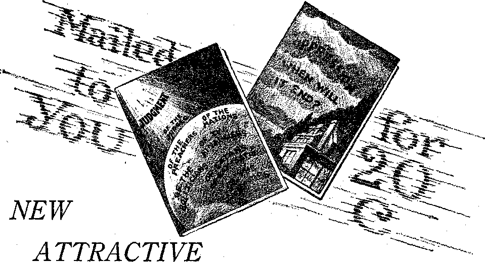

The Concluding Act of the Main Show
A JOURNAL OF -FACT-HOPE AND COURAGE
iiiiiiiiiiiiiiiiiiiiiiiiiiiiiiiiiiiiiiiiiiiiiiiiiiiiniiiiiniiiiiiiiiii in this issue
NOTES ON ADVERTISING
INSTRUMENTS OF PEACE
A COMMON COLD
HOW ANTITOXIN IS MADE
A NEW KIND OF SERVICE
ALUMINUM POISONING
DELIVERING THE OPPRESSED lecture broadcast by Judge Rutherford
iiiiiiiiiiiimniiiiimiiiiuiiiiiiiiiiiiimiiniiiiimiiimiimii
EVERY OTHER WEDNESDAY 5c a copy - $1.00 a year - Canada & Foreign $1.50
Volume X - No. 249 April 3, 19 2 9
Contents
Labor and Economics
Why Not Standardize Profits ............... 426
Social and Educational
MANUFACTURING AND 'iIl.NlNG Labor-saving Machinery in Britain
Finance—Com merge—Transportation
Insurance That Does Not Insure
Political—Domestic and Foreign Instruments of Peace ....
Dominion over The Fish of the Ska
Home and Health
How Diphtheria Antitoxin Is Made ....
A Cook’s Experience with Aluminum
The Ehret System of Elimination
Avoidable Disasters in the U. S. Navy....... . . . 435
Some Unusual Sources and Results of Aluminum Poisoning , . 436
Results of a Dr-aluminized Diet
Massachusetts Doctors Need the Cash
, Religion and Pfiilokofhy What Win. Come to Pass? ..............
Evangelist Business Getting Bad
More About ‘The Stones Crying Out’ ......
Published every other Wednesday at 117 Adams Street. Brooklyn, N, Y., U. S. A., by
WOODWOMU, KNORR & MARTIN
Copartners and Proprietors A ddress: in Adams Street, Hroohlyn, A'. Y., V, S. A.
CLAYTON J. WOODWORTH .. Editor ROBERT J. MARTIN .. Business Manager NATHAN II. KNORR.. Secretary and Treasurer
Five Cents a Copy—$1.00 A Year Make Remittances to THE GOLDEN AGE
Notice to Subscribers: We do not, as a rule, send an acknowledgment of a renewal or a new subscription. A renewal blank (carrying notice of expiration) is sent with the journal one month before the subscription expires. Changeofaddress, when requested, may be expected to appear on address label within one month.
Foreign Offices
British ....... 34 Craven Terrace, London, W. 2, England Canadian . .... 40 Irwin Avenue, Toronto 5, Ontario, Canada
Australasian . . s . . 495 Collins Street, Melbourne, Australia South African . .... 6 Leite Street, Cape Town, South Africa
Entered as second-class matter at Brooklyn, N. Y., under the Act of March 3, 187t>.
Volume X
Brooklyn, N. Y., Wednesday, April 3, 1929
Number 249
A Few Notes on Advertising
ADVERTISING is done to create a favorable impression of something and to promote interest in it. The miracles of the Old Testament and of the New Testament were advertisements of the power of God. By their means millions have been stirred to believe that
A better day is coming, a morning promised long, When truth and right, with holy might, shall overthrow the wrong:
When Christ the Lord shall listen to every plaintive sigh,
And stretch his hand o’er sea and land, with justice by and by.
Throughout Bible times these miracles were performed merely as samples of what will be common shortly. It is plainly stated concerning Christ’s miracles that in them He merely “manifested forth his [coming] glory”. Most of His miracles were performed on the sabbath, illustrative of the fact that the sabbath of the ages, the Millennium, is earth’s healing time.
Whoever has faithfully preached the gospel of the Kingdom has been advertising the King and the Kingdom. Jesus Himself was such an advertiser, and so were the prophets before Him and the apostles after Him. Today this grand work has reached a climax where the happy advertisers are privileged to point to the King and the Kingdom as being both present and in action.
The Lord has used many and various agents and agencies to advertise earth’s rightful government. There is the Bible itself, brimming full of news about the Kingdom. There have been sermons, martyrdoms, books, tracts, dramas, posters, and now the radio, iterating and reiterating God’s purpose of establishing a kingdom of absolute righteousness in the earth. The word “advertise” occurs twice in the King James Version Bible, in Numbers 24:14 and in Ruth 4:4.
The English word “advertising” is from the French word avertir, signifying ‘to notify’. In America the advertising of all manner of things has reached a volume unparalleled elsewhere, and has drawn into its work practically all the best artists and some of the brightest minds in the country.
American advertising has become so important that it now has a large periodical literature of its own, comprising at least twenty-five weekly and monthly journals. The publishing and printing business, seventh in the country’s industries, is sustained by advertising, almost wholly so.
It may be said that, roughly speaking, there are two principal kinds of advertising, posters and handbills. The posters may be of any size up to that of the one in New York city which mars the landscape with a single word the letters of which are sixty feet high. The handbills may be catalogs of a thousand or more pages, or newspapers or magazines of millio rs of paid circulation, but for all that they are handbills, “literature of persuasion.”
It is sad to reflect that one of the earliest uses of advertising by fallen man was the offering of a reward for the return of a runaway slave. Such posters have been exhumed at Thebes. They are written on papyri and are well preserved. Criers were used for the same purpose.
Before the ancient shops of Pompeii were terra-cotta posters or signs. That in front of a milk-seller’s stall showed a goat. That in front of a fencing school indicated two men at swordplay. During the middle ages such signs were common throughout Europe, so that servants unable to read could find them.
Most poster advertising is of the outdoors variety, though an advertiser may put his poster in 32,000 street cars, if he wishes. Incidentally, this will cost him five dollars a car per year, regarded today as one of the cheapest, most effective forms of advertising.
On the continent of Europe, where art is loved for its own sake and where scenery is prized as a real asset, outdoor advertising is controlled by the government. The billboards are regulated as to size, location and display and are made to yield a revenue to the government.
In a country like America, where everything is on a dollar basis, it is hard to get anything done for the sake of art, but billboard reforms are sure to come. The automobiling public are complaining that offenses to the eye may and should be regulated as much as offenses to the nose and ear, and it seems hard, to find a flaw in that reasoning.
The element of safety enters, and is not to be despised. It is said that the multiplying of signs along the highways creates a growing tendency among motorists to disregard all signs. In some places the signs block the road ahead, to the inconvenience and sometimes the danger of travelers. Among the organizations that are working for billboard reform is the General Federation of Women’s Clubs. Their principal antagonist is the Outdoor Advertising Association of America. Naturally, those dependent on billboards for a living fight for their existence.
Among the states that have done something to curb billboard advertising are Massachusetts, Connecticut, Vermont and Georgia. Massachusetts, by a large popular vote, amended its constitution so as to make its billboard legislation legal. Billboards should be restricted to commercial districts.
While poster advertising may have reached its zenith in America, and may possibly have begun its decline, in Britain it is still on the upward swing, and Britain is truly the most “be-postered” land under the sun. The best artists in Britain are doing advertising work on' these posters, but that is true in the United States also.
The Chinese are great people for posters. The modern Chinese are using their ancient temples and monuments as billboards. They might as well. Of what earthly or heavenly use are they otherwise? Erected to honor demons, these buildings are now honored rather than dishonored by being used as a base for posters.
It was in the year 1679 that a London haberdasher bethought himself of the dangerous innovation of presenting each customer who purchased goods of the value of a guinea with a list of the stock handled in his house. Now every other letter in the United States is an advertising letter, and for every periodical posted there is mailed a catalog or brochure.
The oldest known newspaper advertisement appears in a German newsbook of 1591, and is a book notice. France’s first newspaper (1612) was an advertising medium. Advertisements were heavily taxed in Britain until 1833. A single notice of any kind cost the advertiser about eighty-eight cents in taxes.
In America advertisements of books, coffee, runaway slaves and negro girls appeared in the New England Weekly Journal, published in Boston in 1728. About 1840 came a deluge of patent medicine advertisements in the newspapers, which so disgusted the public that, for a generation, it was not considered proper for a reputable house to advertise anything. Magazine advertising began with Scribner’s Magazine in 1870.
The old basis of advertising costs was that it was safe to spend five percent of the selling price of a commodity in advertising it, and that advertising should be limited to the territory in which the goods are sold, and paid for at the rate of one cent an agate line per thousand of circulation.
Modern advertisers key their advertising, so as to know the cost of each inquiry, and the relative value of it. It is not uncommon for a single advertisement in a journal of large circulation to cost the advertiser several thousand dollars. A large daily has been known to carry $30,000 of advertising in a single issue. The people think they are buying news: the publisher is selling them advertising.
Henry Ford is said to have expended $75, 000,000 in advertising his new car. It is not likely that any of that money was lost. Your “Uncle Henry” knows in advance what is going to happen or he does not do it. If you have any-
; thing worth while it pays to advertise it, if you wish to see it popularized.
Have you ever heard of Holeproof, Pepso-dent, “Not a Cough in a Carload,” “Hasn’t Scratched Yet,” O’Cedar, Mazda, Sun-Maid, Spearmint, Maxwell House, Rogers 1847, Seth Thomas, Lux, Heinz’ 57, Waltham, Elgin, “His Master’s Voice,” Howard, Dollar Line, Pennsylvania, Santa Fe or New York Central Lines?
The State Of Maine, through its publicity bureau, expends $50,000 a year to promote tourist trade there and finds that it pays. New Hampshire, Vermont and Rhode Island are following in the same path. There are two large organizations in California similarly engaged in promoting the northern and southern sections of the state.
Some American cities, St. Louis, Miami, Colorado Springs, New Orleans, Daytona, advertise direct. In other localities the cities of a district group together for the same end, namely, to bring travel their way. It pays. Business, in any modern sense, is next to impossible without publicity, advertising.
Six thousand American periodicals recently met with members of the Federal Trade Commission, to try to agree on some method of cleaning their advertising columns of the twenty-eight percent of explicit or implied misstatements of fact with which they now abound. Actually, every one of those misstatements is illegal, and the advertisers are subject to prosecution and debarment from the mails.
In the effort to create a slogan, a mood, an atmosphere, a charm and an exclusiveness, it is easy for an advertisement writer to overplay his hand. In other words, it is easy for him to exaggerate or, in plain English, fo lie. A writer in The Nation has estimated that more than one-fourth of all advertising statements are of the latter class.,
Forhan was asked to show proof that “four out of five get pyorrhea”, when insurance statistics show it is one out of twenty. Ivory Soap, which is “99 44/100% pure” is necessarily thirty percent water content, pure water, maybe. Listerine, questioned about its dandruff claims, backed into the corner with, “It is recommended for loose dandruff.” Probably that is news to some.
Armour’s “Dona Castile Soap”, supposedly “so beneficial for the skin of a woman”, because ‘made largely of olive oil’, turned out to be made of tallow, animal fats and vegetable oils other than olive. J. B. Williams Company admit ti at their creams and soap are the best made, bu. their findings are not op'en to the public. Ever Ready Razor Blades claim to be “the perfect blade”, but when proof was requested the information came back, “We do not make public the records of our laboratory.”
No wonder the disgusted investigator for The Nation sums up the situation as follows:
“I submit the above survey as a fair test of the ethics and purpose of this modern art. It omits the wild exaggerations of cigarette, auto, and cosmetic advertising; it does not go down into the lower depths of the tabloids, the snappy-story magazines, the billboards, or into direct mail advertising, almanacs, or drug store windows. It is a brief cross-section of so-called national advertising in our better-class popular magazines, and contains^ it seems to me, an appalling indictment of American business honesty.”
T N HOUSTON, Texas, a man who has fits of A madness invaded a signal tower, chased out the towerman, and mixed up traffic generally until relieved of his job by two husky policemen. It is a good picture of the world under the Devil’s management. He has been swinging levers right and left, without regard for human life, justice or anything else, only so that he and his pets may keep their jobs. Just now earth’s new King is in the tower-house with righteousness on His side, and a battle royal for possession is in full swing. The battle will have but one ending. The Devil is going to lose out, and is losing out now. Fraud, hypocrisy, injustice, war, tainted food, oppression, profiteering, preaching lies for money, all will have to go. They will not wish to go, but go they must; and go they will.
THE American radio audience is set at 41, 453,496. This estimate was based upon visits to 17,099 families, and as the results were carefully tabulated, it is probably quite accurate. The total number of radio receiving sets in the United States is estimated at 11,032,855.
NEW YORK was recently the scene of a dinner at which one thousand guests were present. It is stated that the average wealth of these men was ten million dollars; so the total wealth represented by the guests was ten billion 'dollars, three percent of the total wealth of the United States.
T N' BRITAIN in the past ten years there have been one million street accidents. Of these, 40,000 proved fatal. Approximately one-fourth of the accidents were to children. Six percent were due to road defects, seven percent .to mechanical failures, four percent to weather and eighty-three percent to errors of judgment on the part of somebody.
A N ARTICLE by A. Cressy Morrison, published in the Mining Congress 'Journal of
March, 1927, conveys the general impression that the League of Nations is slowly simmering down into a group of politicians of the universal opinion that the United States is unduly prosperous, and that anything that can be done to tap American sources of income and distribute American prosperity throughout the world is the normal and proper thing to do.
LONG a center of official anarchy, Pittsburgh has started to clean house and finds its police (so ready to crack the heads of working men) are deeply involved in liquor, gambling, racketeering and vice rings, as might be expected. When the first 252 indictments were returned it was said that the surface of the official corruption had only been scratched. Two police lieutenants and four police magistrates are included in the net. Crime rings of all kinds were permitted to operate with the full consent and protection of city and county police officials.
A FOREST fire ravaged parts of Riverside and San Diego counties, California, burned over 300,000 acres, and is estimated to have caused the death of at least 15,000 quail. The carcasses of 300 deer have already been found in its wake. Much of the wild life in the-district is now without food, and deer are so tame that they will not attempt to run.
STATISTICIANS who have investigated say that a little more gasoline is distributed, per capita, in America, than beer is consumed in Bavaria. In other words, when the American would be happy he gets in an automobile and rushes off somewhere, and when a German would be happy he gathers himself in front of a little round table and a mug of beer.
rpO MAINTAIN the rule by force instead of by applied Christianity the nations of the earth are wasting thirty-five billion dollars every ten years in armaments. If we allow that the cost of building a first class concrete road is $35,000 a mile, this sum, which is now absolutely thrown away, would give the earth every ten years one million miles of perfect highways. The militarists are the curse of humanity.
T T IS claimed that the crooks of the world * are rushing to Namaqualand, South Africa, where the South African government is obtaining upwards of $10,000,000 worth of diamonds every month. It seems that the natives have been' collecting the stones for years and sell for a few cents stones that are worth thousands of dollars.
DAKIN’S Solution, used for the sterilization of wounds, was sent by special messenger from Pittsburgh, where it is made elec-trolytically, to New York, where it was placed in care of the purser of the Olympic. On arrival at Southampton a representative of the British foreign office was in waiting and rushed the package to the bedside of King George. It was used in the treatment of the wound in his lung.
' S THE investigation of the power trust continues at Washington it is not uncommon for somebody who has lied to come forward and admit it. One young man from Kentucky, a publicity agent of the power trust there, has admitted that he lied about power trust activities in his state.
Deadwood Dick Still Living
eadwood Dick, founder of Deadwood City, S. Dak., friend of Buffalo Bill, Wild Bill and other interesting characters of pioneer days in the West, is still living and celebrated his eighty-second birthday by an airplane trip to St. Paul and Chicago, from his home in Rapid City, S. Dak.
ITHERTO most clerical work in China has been done by foreigners. Hereafter it will be done by Chinese. They are making a clean sweep and sending all foreigners out of the country. This is creating a serious situation for hundreds, as no pensions are being paid the discharged men. A religious warfare between Mohammedans and other religionists has been in progress in western China and is said to have taken 200,000 lives.
FEW years ago India was clamoring for more railroads. This has now stopped because bus lines are threading practically all the roads of the country. Now the cry is for good roads. The awakening of the great Indian population of 320,000,000 is definitely under way.
T THE meeting of the Women’s League for Peace, held in Frankfort-Am-Main, Ger
many, many women were so deeply moved by the description of the sufferings caused by poison gas, as related by one of the speakers, that they burst into tears. All see that the next war between the great powers means the end of civilization. .
T NDIA’S death rate is twice that of England and. three times that of New Zealand. The infant mortality rate is two and one-third times that of England and four and one-half times that of New Zealand. India may be said to be the world’s reservoir of infection for plague and cholera. There are 34,000 Indian women employed in mines, where the burdens they carry in the stifling heat are almost incredible.
ON THE first of January all the tradesmen of Italy send calendars or other gifts to their customers for the year past, and every family is expected to remember with gifts every person who has come to their door with mail or has rendered them personal service of any kind whatever. The gifts are expected and, if not received, will be asked for.
This custom is said to have been handed down in Italy from one generation to another since long before the foundation of Rome. It was introduced by Janus, a native of Thessaly, who founded a settlement in what is now a part of Rome, namely, the Janiculum hill.
After the death of Janus he was deified, made one of the Roman saints, the month of January was named after him, and the tipping habit which he founded was continued and is now so strongly entrenched in the Italian mind that even Mussolini has not been able to uproot it.
TTNDER the above title, an English clergy-C-' man has published a book which has attracted the attention of the archbishop of Canterbury, Lloyd George, and other notables. We have not seen the book, but those who have seen it are of the firm opinion that its "writer has seen and made use of the various Bible study helps which we publish and with which our readers are familiar. We are glad if by any means the truth is being spread; though if the gentleman has made use of our literature and has not mentioned it, he has done us, himself and the truth an injustice. But perhaps the Lord does not wish us to get too much credit anyway. The truth is not ours, but His.
THE public loves hokum; and the dear people, especially the American people, live on catch phrases; and catch phrases spread hokum as a Florida realtor spreads sunshine, or at least hot air: ‘‘The full dinner pail,” “life, liberty, and the pursuit of happiness,” “the Avar to end war,” “self-determination,” “make the world safe for democracy,” etc., ad infinitum. The popular song, “I’m Forever Blowing Bubbles,” well expresses our international state of mind.
But the bright comic hue on this human carnival changes to the purple of inexpressible sadness when we see humanity chasing these rainbows, their eyes wet with the tears of centuries, believing, hoping, praying, determined to find at last the road that will take them through this fog, the road that leads to eternal redemption.
Blind, groping mankind cries for bread and is given an elaborate well-done set of terms or phrases: “Kultur,” “'Democracy,” “prohibition,” “Civilization,” and now “'Instruments of Peace”, designed to enforce an organized peace.
Kultur proved to be a guide to the very gates of hell. Prohibition, the goddess of intolerance and bigotry, swept and garnished our national house, and the drink demon has come back and brought a host of companions. '
Democracy is unable to control its own children, and out of the abyss of our great cities arise phantom shapes, called into being by the principle of majority rule, evils that spring from the very nature of our political system. For the right to vote leaves the average man just as it found him, warped and twisted by six thousand years of degradation, unable to control his own life, let alone that of others.
“Instruments of Peace”! Yes, indeed. How that phrase suggests the cold steel of “the operating table”! Suppose then we operate and take this thing apart, this child of the modern hybrid, church, state, and Big Business, now holding the center of the world's stage. “Greatest attraction since the tower of Babel.” “Instruments of Peace” alias “'World Court”, alias “League of Nations”, substituted for the world peace promised the shepherds in the long ago by the very angels of God.
Never fear; the genius putting on this show knows the magic of words, and his audacity stops at nothing. Did he not call the bloodiest part of man’s history “the Christian era”? and
.424
did not the people accept the rack and the thumbscrew as necessary implements in extending the influence of what is or was represented to be “Christ’s kingdom”?
Peace is a state of mind. It is never to be confused with death and stagnation. If your neighbor hates you and his chickens ruin your garden, you can shoot his chickens and ride him out of town on a rail, but you would never be at peace with him until you had taught him to love you.
Now, of course, we know that the promoters of this “peace by the grace of our battleships” have some very tough neighbors. England has the “unspeakable Turk”. Some one says, “Geographically, poor Turkey does not live next door to England.” Right! But you see England is on her way “down to Jericho”. There is oil in that neighborhood.
Dear old Mrs. Grundy, why can’t she have peace ? She wants it so badly. On the slightest provocation she is willing to fight for world peace, civilization, or what have you? Of course she will not stay at home, minding her own business. No, indeed; the idea! This hypercritical old lady is all over the place, planting rubber in India and digging gold in Transvaal; and when she stirs up a hornet’s nest of trouble, you ought to hear her call on high heaven for help!
But we were talking about oil. Oh yes, she must have oil! In 1915, when the flower of Europe’s manhood was bleeding and dying for a set of phrases labeled “Patriotism”, “Liberty,” etc., this pious old lady made a bargain with France that, when the smoke of battle had cleared away, she was to have a country called Mosul, not as a colony you understand, but as a “mandate”, like an Irishman reaching for pork on Friday and calling it salmon.
But why Mosul? Oh, to govern its backward people, to hold it as a sacred trust for humanity, and—ahem!—incidentally to drill, for oil. The terrible Turk objected violently; and here is where instruments of peace come in. There are two parts to Mosul, one with oil and the other without. The League of Nations proceeded to give England the part with the oil, and Turkey the part without. Fair enough!
The World Court promptly backed the League’s decision, and now the Turk can fight if he wants to. But back of the League are the
guns of Christendom; and the decrees of the World Court will be enforced, if need be, with liquid fire and poison gas.
Over in the hills of Morocco is another tribe of people "thundering at the gates of civilization”; and it becomes necessary to drop bombs on them, wiping out peaceful villages, men, women, and children, at one swoop. All these people realty want is to be let alone.
Damascus the beautiful, old as the history of man, lies in ruins because France held a "mandate” to protect it. The stones over which once walked Paul of Tarsus, stones gray with the dust of the ages, were washed in human blood.
A reign of phrases, a reign of terror, “instruments of peace,” indeed! Instruments of the Devil’s own power. Man has endeavored to condone his devilish deeds since Cain asked with a sneer, “Am I my brother’s keeper?” The vested interests of a bygone day turned out a neat phrase, saying, “It is better for one man to die than for the whole nation to perish,” as they took that Just One outside the city walls to be slain in the interest of the “dear people”.
It has remained for.our enlightened age, however, to call bombs “instruments of peace”, necessary in our sacred office of being our brother’s keeper. That is to say, we keep our brother’s rubber and we keep his oil, we keep his cotton and we keep his gold; but as for him whose soul should be precious as the gold of Ophir, we blow him to atoms if he opens his mouth in protest.
The great magician of today plays with words, words, words: words of every shade of meaning, designed not to clarify but to confuse; words that seep into the mind like slow poison; words that befuddle our senses and intoxicate our inmost being. Look carefully, and behold all the nations are drunk with the wine of Babylon!
A JOURNAL in Florida gives us four columns of the experiences of a physician in Fort Myers, that state, who slipped on a cake of soap in his bathroom and fell, fracturing the base of his skull. For two months he required the constant attendance of two nurses, owing to frequent spasms and delirious spells. After four months he was still partially paralyzed.
Three months prior to his accident, Dr. E. L. Rasmussen, the gentleman in question, had purchased from an insurance company policies guaranteeing $150 a week during .such periods of total disability. Now see what happened.
Six weeks after the accident the adjuster for the insurance company arrived and made four separate propositions, first that the man was not suffering from the accident “independently and exclusively of all other causes”; second, that he was shamming and not injured at all; third, that his company was willing to buy back the policy for the $208 originally paid, plus interest; and fourth, that the company would settle for $1,000. All these offers were rejected, and Dr. Rasmussen is suing for the protection which he purchased.
The journal from which we have taken these items says of Dr. Rasmussen’s experiences:
But to force a big and powerful insurance corporation to pay its just obligations to a client,—there is the rub. As ordinarily operated, you pay your premium money to an agent, solely on his personal guarantee of full indemnity against death oi' accident,— or both. In the course of a month or two your policy arrives, duly signed by officials of the company, and promising you on its face in big type ample indemnity against death or any accident that may befall. On the reverse side of the. policy is a lot of small type that is seldom read, in which the company states what it will not do, and qualifying and moderating the promises made on the face of the policy in such a way as to largely nullify its obligation or liability. For instance, an accident, according to their interpretation, may be defined as the complete severance of an arm, leg or hand from the body, with no specific provision for a claimant who breaks his back or neck and is thus totally disabled.
The reason we publish this item is that, years ago, we ourselves got stung similarly. For years premiums were paid on an accident policy. At length the accident came, an insect bite, resulting in erysipelas and three weeks’ lost time. Claim was made for the compensation purchased.
The total compensation called for would have been but a trifle, because the policy was a small
I
one, but when the response from the insurance company came it blandly stated that this was an exception, and to see clauses so and so. Sure enough, the policy itself excluded compensation for insect bites.
But that was not all. A careful study of the policy, and an analysis of it, showed that it was a perfectly worthless piece of paper. Every form of accident that could be imagined had been excluded, except that if a person could prove that in a railroad wreck he was injured while sitting in his own seat, with the window closed, and that he was in sound health at the time of the accident, compensation would then be granted.
The farce of it all is that, as statistics prove, it is actually safer to sit in a seat in a railroad
Why Not Standardize Profits? By William Hall
IT IS an unfortunate fact that not every individual is endowed with the same capacity for earning and producing wealth. Therefore it rests entirely upon the attitude of those most capable as to how the masses shall live. Capital finds its way into the hands of those with the most intellectual mind, the most resourceful and thrifty.
These people, then, are the stewards for the masses, of the wealth provided by nature. Nature proves this stewardship in the fact that when a capitalist dies he does not withdraw his capital, but the capital is merely passed on into other hands. In other words, it still remains in the hands of a steward.
Let us suppose that a business is conducted by five men controlling $200,000 of capital, and that they employ 200 men. For simplicity, let us suppose that each owner charges up a salary of $5,000 a year, and that each workman receives $25 a week in wages. At the end of the year, we will say, a profit of $20,000 is shown. This profit has been produced by the resourcefulness of five men and the labor of 200 men.
To whom does this profit rightfully belong? Is its usefulness best served divided among five men or among all those instrumental in its production? If it is entirely withdrawn into the hands of the five owners, the buying power of the two hundred men is just that much less, and the following year it will be more difficult to show a profit of $20,000. train than it is to sit in a seat at one’s own fireside. The chances of accident are less in the train than in the home.
After the insurance company last named had refused to grant the compensation, they had the gall to continue to send on statements of premiums due on the policy, for some time. Imagine a highwayman, who has robbed you, sending you a bill for any change you might accumulate subsequent to his visit!
An honestly and properly conducted insurance company can be a real benefit to a man or to his family; but if run without heart, and with no other motive than to make money, it can get as far down in the scale as the power trust, and be as antagonistic to the true interests of the people.
Now take combined industry in a country, all extracting their full profits into the hands of the owners, and see what a tremendous effect this has upon the buying power of the masses.
The result is an accumulation of products on the market in excess of the demand, and unemployment must result until the surplus is wasted or destroyed by the few into whose hands it has fallen.
During the period of unemployment the capitalists receive no profits, and the surplus in the market is eaten up to take care of their losses which must occur by having their plants idle while overhead charges remain.
To attempt to extract this loss from the working people when reemployed, causes untold hardships upon them, and is shifting a burden upon a class where if does not belong.
Continuous prosperity can be obtained only by a proper distribution of the profits of labor. Higher “real wages” gives greater buying power, and the articles produced will be disposed of as fast as they are produced. The government should fix the percentage of profit on the amount of capital invested in the various industries.
If a business shows a profit in excess of that percentage, the excess profit should be collected by the government and thus reduce taxation in other forms. A company finding that it was making excess profits, and knowing that such profits would be extracted by the government, 1‘- would be more inclined to increase wages and ,. not show the excess profit.
' Under this system a company would not take -■ advantage of tariff protection, because if, when ., the tariff was increased, they raised prices but did not raise wages, they would show increased profits beyond their allotted percentage, and the government would collect these excess profits.
So long as the 'buying power of the masses is equal to the purchase price demanded there can . . be no overproduction or unemployment, and the nation will gradually develop and become wealthy. This is the principle that should be adopted by the employers- of labor. It results in fair competition, and where superior methods of production are employed it means lower prices.
It requires labor to produce capital; so why not have continuous employment and a continuous building up of capital on a sound basis? We standardize production; why not standardize profits?
[In Harper’s Magazine]
NATIONAL isolation is gone because of trade, communication, and the invention of destructive mechanisms that facilitate invasion. Personal isolation is gone, because of the growing interdependence of producer, distributor, and consumer.
Skilled labor is the exception, now that machines are made to operate machines, and scientific management reduces skill to the inhuman stupidity of routine. Free land is gone, and tenancy increases.
Free competition decays; it may survive for a time in new fields like the automobile industry, but everywhere it gravitates towards monopoly. The once independent shopkeeper is in the toils of the big distributor; he yields to chain drug stores, chain cigar stores, chain groceries, chain candy stores, chain restaurants, chain theaters—everything is in chains.
Even the editor who owns his own paper and molds his own mendacity is a vestigial remnant now, when a thousand sheets across the country tell the same lie in the same way every day better and better.
An ever decreasing proportion of business executives (and among them an ever decreasing number of bankers and directors) controls the lives and labors of an ever increasing proportion of men. A new aristocracy is forming out of the once rebellious bourgeoisie; equality and liberty and brotherhood are no longer darlings of the financiers.
Economic freedom, even in the middle classes, becomes rarer and narrower every year. In a world from which freedom of competition, equality of opportunity, and social fraternity have disappeared, political equality is worthless, and democracy becomes a sham.
WHILE a knowledge of the truth causes one to know that transportation methods will be such and climatic conditions will become so adapted that the ultimate consumer will have fresh fruits and vegetables, it is interesting to know that by means of canned products many can enjoy, at this time, things which otherwise could not be partaken of, except by extensive travel.
While doing some work in connection with the National Canners Association, of 1739 II. Street N. W., Washington, D. C., I noticed their 1927 directory contains the following: corn, peas, tomatoes, apples, green beans, pumpkin
By Harold W. Kline
and squash, fish (including salmon and fish products), tuna, hominy, lima beans, .kraut, lobster, meat, peaches, cherries, pineapple, prunes, her-' ries (all kinds), apricots, apple sauce, honey, pork and beans, baked beans, spinach, cider, spaghetti, milk, succotash, olives, sweet potatoes, beets, rhubarb, sardines, clams, oysters, peanut butter, asparagus, preserves, plums, pears, soups, grapefruit, tomato pulp, plum pudding, red kidney beans, fruit salad, catsup and chili sauce, mince meat, apple butter, syrup and molasses, shrimp, okra, okra and tomatoes, fio'S
A Common Cold By John E. Cutler, M. D.
IN A morning paper of January 11,1928, there appeared on the front page this item: “Science Given Fund to Find a Cold Cure. Baltimore, January 10. (A. P.) — A gift of $195,000.00 to Johns Hopkins University for the study of ‘the origin, nature and possible cure of common colds’ was announced today. The gift, to be known as ‘the John J. Able fund’, was made by the chemical foundation.”
This coincides with the recent statement of one of Chicago’s physicians who said, “Frankly, we cannot even cure a common cold.”
Does it not seem quite remarkable that with the germ theory working for the last fifty years, with hundreds of varieties of germs named, hundreds of varieties of antiseptics made to kill germs, we still get the statement by medical men that germs cause disease. By their shortsighted reasoning, a cold is therefore caused by germs; yet in four thousand years they have not found anything to kill the germs which cause a common cold, if that is what.causes a cold, which, as little Johnnie said, “It ain’t.” ■
Just along what lines do you think investigation will be carried on when supported by a fund from a chemical foundation?
Perhaps we may expect shortly another kind of chemical which you can take internally, or possibly some kind which can be injected directly into your blood; or you may get something which will be recommended as a wash or spray for your nose, throat, and mucous membrane as far down into the lungs as you can inhale it. Although in daily papers and magazines you are offered many such compounds or antiseptics, they do, according to this $195,000.00 offer, fall quite short of the’ mark or a cure.
But certainly no investigator attached to that force is going to come out and tell you what I tell you now, that is, that a common cold is not caused by any germs, never has been, and I don’t think ever will be, but is caused by the dirty, acid, toxic condition of your flesh and blood, which is brought about by your own bad habits of living.
Spraying medications and internal remedies do as much good, and less harm, if applied to the lamp post, unless you first remove the cause, which is your daily violation of the laws of Nature (the laws of the Creator), your bad habits.
By that I do not mean habits that are generally considered bad, as using profane language,? or untruthfulness, or gossip, or busybodying in the affairs of others, etc., but bad habits of eating devitalized foods, such as white flour and, white sugar, polished rice, etc., drinking tea, coffee, etc., not chewing your food thoroughly, and washing food down with liquids.
Drink before, after and during a meal, but don’t wash down food with fluids. Also, you may eat good wholesome food, but the wrong combinations. It is a bad habit to eat starch and protein, or starch and acid at the same meal, or milk and meat at the same meal.
I know these things; I can tell this foundation for $1.95, instead of $195,000.00, what causes common colds; and if they will add five cents, raising the ante to $2.00 (my charge for telephone advice), I will tell them over the telephone how to cure a cold.
In case a sore throat develops in our schools, the health department takes swabbings of the sore throat, and if they find a germ present that is usually present in what is known as diphtheria, they claim that this particular germ caused the sore throat, with as much reason, we might say, as to claim that buzzards caused the dead carcass on which they feed, or that flies cause a manure pile.
The next step of the health department: Everybody gets a shot of anti-toxin. They then take swabbings of the throats of the contacts, that is, those who come in contact with the case of sore throat or diphtheria; and all in whose throat they find the germ usually found in a diphtheria case are called diphtheria carriers. .
This means that, while perfectly well, walking about apparently with no fever, they are dangerous to associate with other people. It is estimated that this is possible in two percent of the people on the streets of our cities. Those teachers or children unlucky enough to have the germ found in their throat are immediately isolated or quarantined, until nature has changed the character of the secretion of the throat; and as the character of the secretion changes, these germs change in character, or disappear.
Rosenow, of the Mayo clinic, changed one species into another and then back to the same species again, simply by changing the media in
‘ 5Vhich they grew. The same experiments were made in both Germany and France: proof positive that the character of the germ depends on the soil, or condition of the individual.
The throats of these "carriers” could be, and cases have been, cleared of the diphtheria germs ' ■ in less than forty-eight hours by putting them on ; strict elimination, which cleans the blood. Clean blood will secrete on all the mucous membranes of the body a clean mucus in which germs of diphtheria or any other pathogenic germs can . not live.
The most powerful germicides in the world are the normal secretions of the body, secreted by clean blood. Germs thrive in filth, while it is necessary for man to be clean in surround-
C ings, and also clean in mind and body.
Dr. P. L. Clark, the founder of sanatology and f of The Health School, at 2637 Prairie Avenue, 7 Chicago, Ill., challenges the world, and agrees to forfeit one thousand dollars if, when he t has the person under his control, he can not in from forty-eight hours to two weeks, clear* A' the germs of diphtheria off the throat of any so-called diphtheria carrier or the typhoid germs A.' out of the alimentary tract of any so-called A. typhoid carrier.
■/ This is done by teaching people, first, what h their bad habits are and how to clean their
.■ bodies of the foul poisons with which their flesh
becomes thoroughly saturated. Then Nature, the only agent that will cure disease, with such help as we are able to give in getting the acid toxic poison out of the blood and tissues, will have a chance to restore them to health.
■ Do not expect to buy a cure for a cold or any : other disease. There are no cures to be had at
- any price, except the price of a little effort on ; your part. It is only clean blood that cures
: disease. You can be taught how to clean your
blood, and how to keep it clean, by being taught what bad habits are, and how to clean the blood and flesh of the poison, and then how and what to eat. Correct diet is the secret of continued good health after the blood is clean. Is it worth the effort ?
. The normal condition of the blood is alkaline. Disease.is the manifestation of a crisis in acidosis and toxicosis (a condition of being acid and poisoned). And so, from birth until death ensues, we have repeated crises in a common cold, croup, measles, mumps, typhoid fever, chronic stomach trouble, asthma, Bright’s disease, diabetes, rheumatism, etc.
The only rational treatment for a cold or other diseases is to clean the poisons out of the poisoned body, by proper elimination (sanatology*); and the cold will clear up, the asthma or rheumatism becomes a thing of the past. The sugar in the urine of the diabetic will disappear, as will the albumin in the urine of the patient with Bright’s disease.
Example: I might treat a patient for a common cold or for chronic stomach trouble, who also had diabetes. In cleaning the poisons out of the body and supplying the minerals to properly neutralize the acid condition and alkalize the blood and tissues, the sugar will disappear, even though I knew nothing about the diabetes.
You see, it is not necessary to put a patient in a hospital under observation for a week, ten days, or two months. Knowing the basic principle that causes all disease, knowing how to get the toxic poisons out of the body, and how to restore the normal alkalinity, any one can be helped back to that degree of health which is normal for his particular body, if he will put forth a little effort to cooperate. The patient must be taught how and what to eat. '
Let us consider some of the effects on the individual. With the knowledge of how to live rightly comes a sense of self-reliance, a freedom from the old feeling of being largely helpless in respect to sickness. Along with understanding goes a certain detachment from the customs and habits of the crowd. It is not freakishness or crankiness, or a fad, but a knowledge that you can get more out of life and give more to it by not following the fashions and certain other ways of living. You are proof against ridicule and the pressure of custom, because you know.
TJRITAIN, with a million or more constantly ■L' unemployed, is finding the adoption of labor-saving machinery complicating her unemployment problem still more. In York the .Rowntree concern offers a guarantee of two pounds a week for one year to any worker thus displaced, if he obtains a .job with some other concern at not less than fifty-five shillings a week.
(By Dr. George R. Clements, Editor of How to Live)
THE so-called Federal Pure Food Law requires food manufacturers to label their goods with a list of what the goods contain, so that a person will have some knowledge of what he is eating. But vaccine and serum makers are so far above the scope and purview of this law, that they are privileged to manufacture any substance that stupidity and superstition dictate, place any label they please on the package or container, pass the same on to medical doctors, who inject the substance directly into the bloodstream of humanity, killing scores by this procedure ; yet no one incurs the slightest liability or appears to be accountable to any authority for such unlawful and dangerous conduct.
For a good many years the medical doctors have' used, and urged the use of, diphtheria antitoxin for protection of persons against diphtheria. This substance is freely injected into the blood of little children, and yet there is not one individual in one million who has the slightest conception of what diphtheria antitoxin is. Let us tell you.
In 1920 Guthrie McConnell, M.D., wrote a book of some 600 pages, entitled A Manual of Pathology. In 1922 there appeared the fourth edition of this work, “thoroughly revised.”
Who and what is Guthrie McConnell? This book contains the following information regarding him:
Major, Medical Reserve Corps, U. S. A., Pathologist to the Cleveland City Hospital, Cleveland, Ohio; Associate in Pathology, Western Reserve Medical School; formerly Officer in Charge of the Enlisted Men’s Class, Yale Army Laboratory School, Fort Leavenworth, Kansas, and New Haven, Conn.; formerly Officer in Charge, Laboratory of the Base Hospital, Camp Devens, Mass., etc.
That information should be sufficient to entitle him to write with some authority on the subject at hand; therefore from his work we shall quote him as follows:
PREPARATION OF DIPHTHERIA ANTITOXIN.—As similar methods are used for practically all types of toxins, a description of the preparation of diphtheria antitoxin will be sufficient.
To obtain the necessary toxin, virulent diphtheria bacilli are grown in alkaline bouillon containing 0.2 per cent dextrose at a temperature of 37 degrees C. for five to seven days. The bouillon culture is then passed through a porcelain or berkefeld filter and stored in sterile containers in an ice-box.
On account of general convenience horses are commonly employed. They should be perfectly healthy, free from glanders, tuberculosis, or tetanus. The horse is injected hypodermically with 0.1 c.c. of the toxic filtrate. This is frequently followed by a rise in temperature, local reaction, and some general disturbance. When these disappear, a “second dose is given.
The doses are cautiously increased in amount and administered every few days until from 500 to 1000 c.c. of the toxin can be given without effect. When the degree of immunity is sufficiently high, blood is drawn from the jugular vein to the amount of from 3 to 9 liters, according to the size of the horse, collected in sterile bottles, then placed on ice for several days until the clear serum separates from the clot. This is then drawn off from the coagulated blood under aseptic precautions, and in it is the antitoxin. It is preserved by the addition of small amounts of phenol, trikresol, etc.; this latter seems to be the most satisfactory.
[Note 1.—After the horse has been injected hypodermically several times with the toxic filtrate, it appears to become ‘ ‘ immune” to the injections. Is this true? The first cigar makes a young man very sick, but after several attempts he can smoke cigars without any apparent effect, and he has become “immune” to the action of the deadly nicotine. At the age of forty he suffers a stroke of paralysis and dies as a direct result of the effect of the nicotine on his body. Was he ‘ ‘ immune ’ ’ to the effect of the nicotine?.This is the character of “immunity” that is described above by Dr. McConnell.
Diphtheria antitoxin is injected into the blood of children, and we are told that “it is preserved by the addition of small amounts of phenol, trikresol, etc. ” It is difficult to state definitely what “etc.” consists of, but phenol is plain old carbolic acid, and trikresol is not defined in any dictionary at hand. Little wonder that children die within live minutes after this deadly admixture is injected into their blood.—Clements] After the serum has been obtained, its strength or potency, as expressed by the term “immunizing units ’ ’, must be determined. An antitoxic unit may be defined as being ten times the least quantity of antitoxic serum that will protect a standard (300—gm.)' guinea-pig against ten times the least certainly fatal dose of toxic bouillon.
To determine the strength of any given serum, the minimum fatal dose of a sterile toxin for a 300—gm. guinea-pig must be ascertained. Then must be determined the least quantity of antitoxic serum that will protect a guinea-pig against ten times the ascertained minimum fatal dose of the toxic. The necessary dose of antitoxic serum is expressed as a fraction of a cubic centimeter multiplied by 10, the result equaling one unit.
Ehrlich, in determining the unit, makes use of a standard antitoxin by which the antitoxin combining power of the test toxic bouillon is first determined. The toxin unit, having been found, is then used to de-
termine the antitoxic unit of antitoxins of unknown strength.
The power of antitoxic serums differs greatly: some contain 200 to 300 units per cubic centimeter, while others may contain even 1700 to 2000 per cubic centimeter.
Inasmuch as the antitoxin is only a small portion of the serum, various methods have been sought, by means of which the useless, and SOMETIMES HARMFUL [caps are ours], portions may be eliminated.
[Note 2.—Now some one lias told a deliberate falsehood. The United. States Publie Health Service and the so-called state boards issue bulletins to the effect that diphtheria antitoxin is perfectly safe and harmless, and here Dr. McConnell declares in his book that the antitoxin is ‘‘sometimes harmful”. We shall believe what Dr. McConnell says, for hundreds of people have been killed by the use of antitoxin. What can we think of a government growing so corrupt with polities that its officers thus aid and assist vaccine and serum manufacturers to deceive the people—for gold?—Clements]
ANAPHYLAXIS is a term applied to an increase of susceptibility of infection; it is the opposite of immunity. It is a reaction that will occur with the parenteral form of injection of foreign proteins of any kind.
In order to obtain the characteristic reaction, it is necessary that a period of from 6 to 10 days intervene between the first and second injections. A guineapig may be sensitized by 0.001 gm. of horse serum introduced into the peritoneal cavity. Eight to 10 days later a second injection of 0.1 gm. of the serum is given, at which time the animal will become restless, short of breath, scratch itself violently about the nose, then become depressed, and die within one hour. Autopsy shows the lungs to be greatly distended and numerous small hemorrhages present.
Similar symptoms have been encountered in people who have received antitoxin horse serum. In addition, there are skin eruptions, joint-pains, and edema (dropsy), a condition known as serum sickness.
[Note 3.—Here is more evidence to prove the dangerousness of diphtheria antitoxin and all horse serums. And when a person who has been inoculated with these deadly serums by medical doctors happens to die under the care of a chiropractor or a naturopath, the chiropractor or naturopath is promptly haled into court on a charge of manslaughter.
It is related in the Herald-Tribune (New York), under date of May 13, 1928, that in November, 192(5, Dr. T. H. Whitelaw, Medical Officer of Health, in Edmonton, Canada, complained to governmental authorities against a radio program in which the speaker stated that he had been in the world war and that the ‘‘dirty doctors” had inoculated filthy diseases into the bodies of the soldiers by the use of filthy, putrid animal matter (serums). ■
Thus those who tell the truth regarding the greatest menace on earth must be suppressed and muzzled. Remember, ‘‘no evil is ever corrected by those who profit by it.”—Clements]
A Cook’s Experience with Aluminum. By L. G. Ross
I HAVE read and watched with interest all articles in The Golden Age about aluminum. For many years my living was earned by cooking, and for years I have known that there was something radically wrong with aluminum cooking ware, as I have watched carefully the action on foods cooked in that ware, especially anything containing acids.
If any human in this world wants to prove to his own satisfaction that aluminum is rank poison for cooking purposes, let him stew some apples to a sauce with sugar in them while cooking, then set them away in the aluminum kettle in which they were cooked; also add the juice of half a lemon before cooking. My advice would be, Just look closely at them the next day and then throw them into the garbage can, as they will not be fit to eat,
I am now recovering from acute aluminum poisoning. The best doctors in San Francisco, with all the latest inventions and X-rays, test meals, dark room, and every test known to the medical profession, could not tell me what was the matter with my stomach and .bowels. They said I had a possible ulcer and some other possible things 1 could not understand, but they fed me daily a diet from a kitchen filled with aluminum ware.
Xow, thanks to The Golden Age and Dr. Betts, I can chase two-hen and one-hen combinations all day, with no bad effects, only that at night I can eat like a horse, if I use the same sense most horses use and eat that which agrees with me.
I surely hope you will keep up the good work of exposing this evil. I can easily believe that aluminum is the direct cause of three-fourths of the stomach trouble in the world today, and probably of all the cancer trouble. By the way, I also had a cancer cut out.
You may use this letter as you choose. If the waste basket is the best place, I can smile with you. I am not very smart in the lore of writing or expression, but, thank God, I have sense enough to understand that God has a remnant now in the earth. (Psalm 66:2) Please pray for me that I may never become blind to my great privilege.
The Age-Long Circus—
HDHE complete commercialization of the nom-4- inal church is fitly illustrated in an item appearing in the Scranton Republican for February 5,1929. We quote verbatim below (italics are ours):
Plans for the “Every member” canvass of the Embury M. E. Church to be held next month were discussed at a meeting of the finance committee last night . in the home of C. C. Meisenhilder, 1260 Watson Ave. Teams will be appointed to make the visitations among the members, and a report will be given at a meeting of the committee to be held at the close of the drive. Reports from the committee show that a number of pledges for the year 1928 have not been paid, and a debt-paying service will be held Sunday, March 1, in order that the books may be balanced before the conference meeting. Other matters concerning the finances of the church were discussed, and a social time was enjoyed. The Rev. W. E. Webster, pastor, presided over the session.
There have been baptismal services, burial services, marriage services, excommunieational services, memorial services, Easter, Lent, and Christmas services, patriotic, nihilistic, futuristic and atheistic services in nominal churches, but it has remained for the Embury M. E. Church of this city to claim .the distinction of having originated the '"debt-paying service”.
What a well-organized business firm the mod- i ern church is! -with a finance committee trained to hunt up delinquent pledge-payers; with printed forms, on which the poor devil that is roped into supporting the church assigns him- > self as promising to. pay a. certain portion of his weekly or monthly stipend toward the feed and upkeep of the "man of God”.
How vTell the modern church "adheres to the | spirit of Jesus”! Not only does it continually beg for money, but deputizes a body of people whose self-respect is dead, to pester the unlucky members to fulfil a disgraceful pledge which it has forced from them through misrepresentation and hypocritical "religion”. .
Howtenderly the modern church "looks after the spiritual welfare” of her dupes! Grasping the victim’s throat with one hand, and delving into his pockets with the other,she forces a nauseous compound of Jesus-America-H o 1 y-Gho stS oul-Damnatio n-P i p e-organ-H e 11-My-c o u n-try,-’tis-of-thee into his mouth, and when he is thoroughly dazed and stupefied, turns him upside down and relieves him of all his valuables.
The Last Act or
One little improvement could be made in the financial system of the modern churches. Instead of appointing ar-rears-collectors, why not form a credit-investigation committee to ascertain the financial status of prospective members, and assure themselves of a certain income ? Some proselytes are “poor pay”, and we can not bother with a soul unless it is well padded with shekels.
A "debt-paying service”! The minces eye pictures vividly the course of procedure at such a powwow. It is Sunday evening, March 1. (Be-W’are the Ides of March!) The organ plays softly. Morons, by twos and threes, enter with noiseless tread and sit stiffly down upon newly-dusted pews.
The organ drones along for a while, and then . with the Blues, J. D. Barbee, captain, leading their
ceases. A solemn hush ensues. From behind opponents, the Grays, Herschel Tyler, captain, by a the pulpit pops the reverend gent, and elevating small margin. A devotional service will be followed « his physiognomy toward the gallery prays: by breakfast. All young men without other church
“0 Lord, we come to Thee in a spirit of thank- . a?s5>c\at^°?s. are hivited to take part in the . 7 -.30 fulness, because that Thou hast heard our pray- 0 c ock affa11’ an(110 j°in the class lf they so desire-
5 Sideshow and—
ers. We have promised Thee a new boiler, O Lord, and now it is Thine. Thy sheep have paid for it, for Thine is the kingdom and the power, and the poor we have with us always; but blessed be the finance committee that successfully got some more money out of them. Do not fear, O Lord, we are striving to help Thee: we will soon have the church in condition to receive Thee. But a little while, and Thou shalt see us go over the top with our membership drive. Bless this glorious country, 0 Lord; and may the fruits thereof be for ever held tight in the grasp of those who have given Thee the greatest churches. We thank Thee for the glorious results of this our recent cash crusade; and we implore Thy superintendence over those who have the care of it, for there is none worthy, no, not one. Amen.” We add a few varieties, unintentionally overlooked. Denver had an ape or Chimpanzee service; New York has had several barelegged dancing-girl services; Salt Lake City has its regular what we might call red-light services; and now here comes one more, a pajama service. We quote from the Jacksonville (Fla.) Times Union, of February 9,1929.
BIBLE CLASS TO HOLD PAJAMA MEET SUNDAY
A distinct departure from the usual run of Sunday school procedure, a “pajama meeting,” will be observed by the Comeback Bible class of Hendricks Memorial church at 7:30 o’clock Sunday morning in the basement of the church.
The class, a young men’s group, is now engaged in an eight-week membership drive. The early morning meeting will mark the end of the first half of the race
Sixty-eight Years of Failure
HHHE United Lutheran Church of America, which is spending $25,000 a year in mission work in Africa, has decided to continue the 'work despite the fact that after sixty-eight years the church has no native congregation and during the past two years has obtained but one convert. The. Lord spoke about those who “compass sea and land to make one convert” and described the kind of convert that results; and one can but wonder what kind of man this convert of the past two years really is.
Evangelist Business Getting Bad
AT THE general conference of evangelists of the Methodist Episcopal Church South, held in Memphis, the lament was raised that unemployment among evangelists is now serious. It seems at this time that they may have to make tents or go fishing or engage in carpenter work or other honest and honorable occupations similar to those of the apostles and others of their day and since. It may come hard at first, but they will get used to it.
The Concluding Act of the Main Show
The Ehret System of Elimination
THE article on “Constipation First, Cancer Next”, in the current issue of The Golden
'Age, gives fine support to Professor Arnold Ehret’s well-grounded dictum, that there is but one disease, and that is constipation. Dr. Ehret’s definition of constipation is not confined to a clogged colon, but discloses the fact that the entire system of veins, arteries, pores, atoms, tissues, etc., are clogged with waste matter taken into the system from childhood.
He declares that the so-called healthy man carries about with him as much as ten pounds of unusable waste matter, poisoning the blood stream and the brain. To quote:
Every disease, no matter by what name it is known, is CONSTIPATION, a clogging up of the entire pipe system of the human body. Any special symptom is therefore merely an extraordinary accumulation of mucus at this particular place.
When these latent disease matters are occasionally stirred up, as for instance, by a cold, he expels great quantities of mucus, and feels unhappy instead of' enjoying nature’s cleansing process. If the quantity of loosened mucus is great enough to shock the entire system, more or less, but still not dangerous, it may be diagnosed as influenza.
If the eliminating work digs deeper into the system, especially into that important organ, the lungs, so much mucus and poisons are loosened at once that the circulation has to work under great friction, similar to a dirty machine or, for example, an automobile running with its brakes set. The friction produces abnormal heat, which is called fever, and the doctors call it pneumonia, which, is really' a feverish effort on nature’s part to free the most vital organ of its waste.
The .elimination via the kidneys, shocking that organ, is called nephritis, etc. If sugar or albumin is found in the urine, it is called diabetes or Bright’s disease, etc., but always the result of a constipated condition affecting that locality. Over four thousand names are given by ‘‘medical science” for the one disease, the name given made up according to the respective locality of elimination.
Dr. Ehret holds and clearly shows that the lungs are the pump, and the heart is a valve, instead of the reverse thereof, as held and forced on the world by medical science, so called. He reasons and proves that the so-called 'white corpuscles of the blood arc more waste, and only waste, in the system, and proves it by the simple statement that the more ■waste we have and the sicker we are, the more numerous the white corpuscles in the blood. He knocks cold the
By L. D. Barnes
theory of “metabolism” and brands it the most dangerous teaching ever imposed on man.
Not knowing Jehovah’s plan, and having healed himself by his. system of fasts and diet selection, Dr. Ehret leaves the impression that man can eat his 'way back to Paradise. It is true that things look vastly different through a clean body, never’ clean before.
There is only one disease, and one remedy, and that remedy is ‘right food in right combination combined with fasting’. If you have not read Prof. Ehret’s work, entitled “Mucusless-. Diet Healing System”, you have missed a great enlightenment along human needs. The address is Ehret Publishing Company, 846 E. 6th St, Los Angeles, Calif.
Get rid of the age-old waste in your system, and look through clearer eyes of brain and optics. Discard the rotten “food values” and “combinations” of civilization which are a part of the great deceptions imposed by the Devil on the whole world. Professor Ehret offers the only road to reasonable health and living possible to man outside of the restoring processes of the kingdom of God on earth.
For a year past the writer has been giving this sensible proposition a trial, leaving off breakfast and eating largely of fruits and greenleaf vegetables, gradually leaving off starchy elements and coming to. a mucusless diet. After a life poison-soaked and steeped up to now, sixty years, I can begin to see and feel the power that comes from right eating and the value of a clean'body, though only in part attained.
Starch and putrefying meats will kill you before your time. Clean up by allowing your expanded stomach and colon to rest, thus allowing nature to throw off the waste. Get the relief that is sure to come by allowing the stomach and large intestines to contract and once assume their normal size and shape. It is surprising what gluttony can produce in the way of unnatural hunger.
It is surprising, too, how- long one can fast in a clean body and how little it requires to run the human machine. Would that all might know of this wonderful benefit. The perfect food is composed of fruits and vegetables, part raw and part cooked. Warm enemas and Dr. Ehret’s “Innerclean” are great aids in the cleansing, renovating system.
(By Dr. W. Armistead Gills, U. S. Navy [Retired], Richmond, Va.)
Admiral Magruder stated before the House Naval Committee that the personnel should ]be transported by privately owned ships. We “shoved off” from San Francisco to Guam, a voyage of twenty-four days, in an old, ill-ventilated transport built thirty-three years ago. The officers’ quarters on the upper decks were modern. I was on a passenger status. Although January, when we arrived at Hawaii, only seven days out, it was as hot as August is in the States. There were 800 of the nation’s defenders “below”, some of whom were enroute to the Philippines, a month’s voyage—a veritable imprisonment.
When the sea was rough, the hatchways, portholes and other avenues for ventilation, had to be closed. At night, due to tropical heat, what little space there was on the upper deck, the enlisted men occupied. It reminded me of imprisoned animals trying to escape. One officer remarked, “We can spend millions to return the dead from France, but we can’t afford to give the living ordinary comforts.” I made frequent investigations while others were “dead to the world”. Odors emanating from humans and old plumbing were sickening, and I only hoped that some day the movie screen might reveal the exact conditions. Laundry and shower baths were inadequate. Electric lights were required in day time. Measles developed. Such quarters might not injure freight. The bright red cheeks with which we embarked at San Francisco, upon arrival at Guam had been replaced with frown and pallor; the twenty-four days’ incarceration was unmistakable.
A fish out of water under favorable conditions is bad enough, but, in addition, it frequently happened that these fighters must be detained in quarantine for twenty-one days more, on the payroll, earning nothing but discontent. Underweight and lowered resistance incident to the tropics, canned food, partial free speech, and untrained doctors with military rank, supplied whatever was lacking to complete the picture. In one month, I attended four men with tuberculosis back to the States. One sailor (from Texas) died at sea. During six years we have to our discredit 621,898 sick days for tuberculosis; sickness after discharge, unknown. Tuberculosis can be removed from our first line of defense.
Isn’t life just as dear to the officer or sailor (and his loved ones) who is invalided or dies of preventable disease, which record is put on the shelf, as to those who are injured or die in the air, or under ivater, on account of apparently unavoidable casualties, published to the world, the prevention of which are sought by the nation? It’s a long road without turns. For the fiscal year 1927 there were 929,139 days spent on the sick list in naval hospitals, to say nothing of the sickness at stations and aboard ship. Twenty officers, one nurse, one midshipman, and 133 enlisted men died of disease. Our personnel being selected, separations should be for length of service and age; yet sixty-three officers and 1,992 enlisted men were invalided out of the service for disease. Sixty-seven interns were commissioned, while forty-nine medical officers resigned. The sickness cost upwards of $3,000,000. Haven’t we a sick navy?
ON the high hills of eastern Oregon crops are grown only every alternate year. In one season the land is plowed and the wheat is sown; and the next year the harvesting is done. One man owns a large tract of this high-hill land, and another man owns another similarly extensive tract.
The same is true of the sandy districts of eastern Washington. The large land-owners bought the land that homesteaders could not afford to hold and till but that was lived on during three months of three years in order to secure it from the government and gain a deed to it. The big ranches then bought it for tilling or for stock-raising. The croppage is comparatively small, and hardly justifies the tilling of the land every alternate year.
To turn two furrows on some of the rough, steep hills in the state of Oregon nine-horse teams are being used, and are driven by one man, who has to stand up on the plow most of the time.
FOR the past six months I have been examining all my patients by means of the White B D C Vagal Reflex method for aluminum poisoning.
As a result of these tests I find that from eighty to ninety percent of all my patients, both in acute and in chronic cases, show aluminum poisoning in one or more places in the body. Thus, after syphilis, this is the most common source of toxemia.
According to medical scientific procedure and results, the acute poisoning by a drug or plant in a non-lethal dose is counteracted and corrected by the high potency of that same drug or plant given internally. In my tests anything under 200x was too low for this purpose. From that I went up to the 500x, CM and DMM. In these tests I used aluminum nitrate, phosphate, silicate, muriate, calcarea-silicate and plain aluminum. Aluminum nitrate is oftenest found indicated, the aluminum muriate next most frequently, while in chronic cases of much trouble all forms of aluminum are found.
You can get aluminum poisoning through all kinds of foods cooked in aluminum cooking utensils, and even from mixing food or having it stand in these dishes (once I showed this poisoning myself by eating only one tablespoonful of potato salad mixed in an aluminum dish); from water boiled in an aluminum teakettle, even if that kettle is lined with one-sixteenth of an inch of lime deposit; even from water standing in an aluminum water-pail. When ordinary tap water stands for a long time, gradually little knobs form on the inside wall of that pail from the action of the salts in the water on the aluminum, and this continues until a hole is eaten completely through the metal. This happened to me two different times with heavy aluminum containers before I woke up to what it meant. Coffee boiled in an aluminum coffee-pot is darker than normal and has an off taste.
Most candies are prepared in aluminum dishes; and this is a prolific source of this poisoning, one lemon drop, one orange drop and one peppermint, separately, giving this poison reaction inside of ten minutes.
We all know about the aluminum baking powder; but we often forget this in buying bakery cakes, etc., made with that same baking powder. Colic of a breast-fed baby was directly traced . to the mother’s eating one piece of this cake; and several doses of aluminum nitrate 200x and higher being given, the mother quickly neutralized the toxemia.
Many of our crude drugs, when mixed and prepared in an aluminum mixer, will have enough of this poison in them to show the different salts of aluminum in the patient in fifteen to twenty minutes. I have demonstrated this with two different tablets, made by separate firms, on a subject free from all aluminum poisoning, who within fifteen to twenty minutes after taking this tablet showed positive on this test. In one case others noted and commented on her not looking as well as usual, more than one hour after the antidote had been given. And the company making one of these tablets later admitted that they used some aluminum mixers. Thus, some of the very medicine that you are giving may be the source of this poisoning.
The symptoms of an acute poisoning from even a medium dose are a peculiar feeling in the stomach, which I would describe as a cross between hunger and a mild pain, coming on within ten to twenty minutes, and lasting about half an hour to an hour, and followed by a lazy, sluggish feeling all over, lasting from four to eight hours. After you have noted these symptoms several times on yourself you will know at once when you have been poisoned by aluminum.
This poison must be excreted from the body by bowels or kidneys; and thus, in cleaning up the body, you find it last in anus and urethra and sometimes in prostate. If the bowels act fully and completely and from two to three times a day, as they should, then this poison can pass through the body without much of bad effects. But if the bowels are sluggish, then you get a loading up anddlamming back, until every organ in the body is poisoned and it finally breaks out through ulcers, etc. An ulcer is nothing but the effort of the body to throw off chronic excess poison at that point. That same thing is true in cancer. Here you always find, according to these tests, natrium muriate and aluminum nitrate being excreted, and potassium nitrate present.
In severe cases it is found in liver, gall-bladder and colon; in points of special trouble, as in chronic sinusitis; in any glands of lowered rm sistance, as breast, thyroid and prostate; in mucus membrane of mouth, stomach and small intestines, as ulcers; in mouth of urethra and uterus, as inflamed areas or ulcers; on skin, as dark patches, elevated areas or ulcers; and in nerves of arms or legs, as neuritis. From these severe cases of many points of trouble you find all graduations to only one or two places in the body.
A boy with a sore eye thought he had something in it, but could find nothing except conjunctiva of upper lid swollen. Test showed aluminum poisoning only in the eye and in anus, due to eating (the two days before) soup which had been cooked in an aluminum kettle. No other drugs or trouble was found.
A man with severe sciatic pains, and treated for years for this as rheumatism, showed only aluminum poison along the whole course of the nerve. Improved promptly under this treatment. In a recent retest of over a hundred cases of cancer, in various parts of the body, I found this aluminum poison at the point of cancer in every case. The same thing is true of natrium muriate. Do we all fully realize what this means? Think it over and try to find the correct answer. It’s worth while.
Thus we see by means of these easily demonstrable tests that this poisoning is almost universal, constant day after day, or even several times a day; and by its loading up in the body it can poison any or every organ, and that it is actively excreted at the point of major trouble. This may be a big factor in any disease.
It behooves us all to learn more and more about this trouble, and to enlist actively in the warfare against it by spreading the truth wherever possible; and we can be certain that the truth will prevail.
HAVE been doing all in my power to convince people they should not use aluminum cooking vessels or alum baking powder. I quit using aluminum cooking vesse’-; and baking powder about a year ago. Before I quit using them my daughter and I had gall-bladder trouble and frequent attacks of indigestion, and when I ran against a chair or table my small blood-vessels would burst, leaving large black spots. I also had bad colds every six or eight weeks.
Have had only one cold in the last year; my blood-vessels no longer burst easily, and am not bothered with gall-bladder trouble any more. Am not bothered with indigestion at all. My throat was always red and sore before I quit using aluminum; it is now well. About three years ago I was treated for cancer. Last summer my doctor told me I had no cancer.
I firmly believe that aluminum poison was the cause of the cancer as well as of the other diseases mentioned.
rpiIE enclosed clipping regarding vaccination in Massachusetts will doubtless be of interest to Golden Age readers. Evidently the Massachusetts Medical Society is in need of some ready cash. I am more than ever convinced that the M. D.’s and the D. D.’s are twin brothers.
SMALLPOX IN NATICK IS TRACED TO GARDNER .
Wholesale Vaccination Essential, Is Dr. Bigelow’s Comment
Another case of smallpox, that of Robert McCarthy of Natick, was reported yesterday to the state department of public health. McCarthy was in contact with a Gardner case, making a total of seven cases directly traceable to the Gardner case, which had been imported into Massachusetts from Maine.
As in most of the other cases, McCarthy had never before been vaccinated. In commenting on the development, Dr. George TI. Bigelow, state health commissioner, declared: “This creates still further demand for wholesale vaccination.”
It might be well to write Doctor Bigelow and suggest that he advise the dear “peepul” in those towns where smallpox is “raging” to use “extract of calves’ liver” to stay the “epidemic’* ■until such time as the “poor overworked doctors” can get around with their squirt-guns and pus.
I have not the slightest doubt that our good friend Bigelow would adopt such a suggestion, particularly if lie thought there was any money in it for the members of the Massachusetts Medical Society.
Thank God that the great King of glory stands at the door, and is about to show this unscrupulous "bunch-’' of frauds and quacks the exit.
THE article in The Golden Age of October 31 has brought to my mind an interesting occurrence which I personally saw with a friend many years ago, long before I came into the truth. It might interest readers of The Golden Age. I knew a gentleman who was the keenest fisherman I think it is possible to find, lie had a garden on the river-bank at Cambridge ; and every day in the year, summer and winter, for years, he used to feed the fish around his garden. As a consequence, he used to draw all the fish in the neighborhood.
One Sunday morning I went up to his garden like a friend and I saw him take a handful of boiled wheat, walk to the end of his garden where fish were in the habit of congregating among the weeds and make as though he was throwing the wheat to them. He continued this procedure from one end of his garden to the other, pretending to throw the wheat in; but not a grain left his hand. And hundreds of fish in shoals, big roach and dace and the small fry, followed him from one end of his garden to the other, alongside, a distance of about fifty yards. When he arrived at the top he turned ’round and repeated the same performance, and the fish likewise turned ’round and followed him all the way back. They were not the least bit afraid of him, and as a fisherman myself (now a fisher of men, but then of another kind) I know how timid fish are. They are off. at the slightest movement or sound, and more so at the sight of a human being.
This gentleman had completely tamed them, so to speak. Another thing he managed to do with them was to lie down, lean over the edge of the water, put his arm down into the water and feed them, or attempt to feed them from his hand. I have seen this myself, but he never quite succeeded in inducing them to take grain off his hand. They would come within an inch or two of his fingers and take the grain which he tipped off for them, showing no fear. My friend has studied the haunts and habits of the fish for years and was the most polished and skilful angler one could ever come across.
This incident and the one reported in The Golden Age surely prove that in the near future with the establishment of the Lord’s kingdom, man will undoubtedly regain dominion over the beasts of the field, the fowl of the air, and fishes.
If an imperfect man such as I have mentioned can control, to such an extent, the fish which are so timid, what will the perfect man be able to do by the Lord’s arrangements?
Rev. Martin J. Scott, Jesuit, in a radio talk over M’LWL, New York, December 21, 1928, made the following contradictory statements :
"When it is said, that Christ is God, it is meant that he is Jehovah, the Creator, the Almighty and the Eternal.
‘■When the high priest solemnly adjured Christ in the name of Jehovah to say whether he was the Son of the living God, He declared that he was.
“If Christ be not God He is either a shameful impostor or a deluded fool.
“We have Almighty God’s authority for believing that Jesus Christ is what he proclaimed himself to be, the Son of God.
“Jesus Christ was Almighty God’s Christmas Gift to mankind.”
The above extracts are taken from the printed address as it appears in The Catholic News. How is it possible to reason with a man who brings forth the evidence that Jesus Christ is the Son of God, and insists that that proves that He is God himself, His own Father?
ONE of our subscribers in Palestine, E. S.
Harwood, has been so good as to send us a picture of the incinerator plant of Jerusalem, which stands immediately on the edge of the Valley of Hinnom, Gay-Hinnom, Gehenna, Hell. In his accompanying letter Mr. Harwood says:
“Enclosed are a few cuttings, also the Valley of Hinnom of 1928. On this site is the refuse and offal of Jerusalem of centuries, as the destructor is built of this accumulated rubbish. The smoke is blowing in the direction of the Mount of Olives. The new university on Mount Scopus is on the highest point.
“The religious teachers or clergy, who do not believe, yet teach, hell-fire and brimstone, refuse to admit the error of such teaching and, as sys
tems, they refuse to repudiate such falsehoods as God-dishonoring and unseriptural.
“The site of the Valley of Hinnom and the fact of its being a place of destruction must have been acknowledged by the Jew’s and others throughout Palestine who from time to time visited Jerusalem.
“By no means could this site, Gehenna, called "hell’ by the clergy, be regarded as a place of torment. There is, of course, the usual insect life which abounds in and lives in the work ^destruction. And The worm dieth not’. This in itself is a figure of complete and everlasting destruction. You are quite at liberty to reproduce these photos, if of use. These are taken from the road leading to St. Stephens Gate.”
IN SOME of the broadcasting stations in Europe, especially Germany, the highest quality of microphone used consists of an actual block of marble (real stone) enclosing a secret mixture of crystalline material (also stone) highly compressed. Sound waves from a speaker proclaiming the inauguration of earth’s new King set up mechanical vibrations in this stone which in turn causes corresponding changes in an electric current flowing through it, which in turn is amplified and then modulates the output of a high power radio station, -which in turn radiates abroad over the earth and thus carries the good ne’ws to the waiting multitudes.
Coming nearer home, here in the United States, where there are more broadcasting stations than anywhere else on earth, practically
By Ralph H. Leffler, Radio Engineer ninety percent of all the stations use a microphone which utilizes a form of stone as the active element. Every one knows that a diamond (a stone) is pure carbon. These microphones use carbon granules as the connecting link between the mechanical vibrations of a diaphragm and the pulsations of an electric current.
Thus, here too, a form of stone is at the very beginning of broadcasting, and, therefore, whenever a lecture is given over a radio station by some speaker who is witnessing to the incoming kingdom, it can properly be said that ‘the very stones are crying out’.
The clergy have ceased to tell the people the truth, which they were commissioned to do; now, therefore, behold the very stones are doing a work which they have neglected to do.
Chicken Tripe for Appetite
THIS should have been given its proper place in the article of recent date that listed some strange potions for the cure of diseases. A Bible Student with a poor appetite (strange to say) was told by her butcher that he would furnish her with a cure which consisted of the inner lining of a chicken’s gizzard, properly cleaned
By D. Finch
and dried. A seasonable inquiry to our ailing friends should now be, “Have you used chicken tripe?”
[Our own choice would be for the same parts taken from finches, but such birds are hard to get.—Ed.]
[Broadcast from Station WBBIi, New York, by Judge Rutherford.]
Saul of Tarsus was a Hebrew. He was a lawyer of high standing. He was a member of the Supreme Court of Palestine. If he lived in modern times we would doubtless speak of him as Mr. Justice Saul. He was zealous for the law. .Because of his associations he was for some time blinded to God’s purposes. He had an honest heart, and in due time the Lord let him see the truth. That was exactly in harmony with, what God through His prophet had said: ‘The secret of the Lord is with them that reverence Him, and to such He will show His plan.’ (Ps. 25:14) After Saul became a Christian he was known by the name Paul. The Lord made him special ambassador to carry the message of truth to the Gentile nations. This commission he performed faithfully. Under the supervision of the Lord he wrote the greater part of the ■New Testament. In his epistle to the Romans he said: ‘For we know’ that the whole creation groaneth and travaileth in pain together until now, waiting for the manifestation of the sons of God.’
At the time he wrote that epistle four thousand years had elapsed since the tragedy in Eden. During those four thousand years the people had suffered at the hands of the few who controlled and operated the authoritative governments. Nearly two thousand years more have passed since Paul wrote those words, and you who are now listening are fully aware that the people still suffer. Much of that suffering would be unnecessary if every part of the institutions of this world were conducted on a reasonably honest basis. The common people produce the wealth, but enjoy a very small proportion of it. In order to have in mind some of the oppressive conditions which cause the people to groan, I mention a few in various parts of the earth.
In Roumania conditions are almost unbelievable. Recently the queen of that nation visited America and was entertained and feasted and ’dined by the powerful of this land. The papers reported that she wore gowns glittering "with diamonds. At the same time the poverty in Roumania was so great that the Roumanian press was not permitted to publish the details of the queen’s visit to America for fear that it would provoke a revolution. The laborers there get twenty-five cents a day for fourteen hours’ work. The peasants live on boiled dried corn scraped from the ears, which the hogs in this country eat raw. Their shoes are rough tanned hides laced around the feet. On her way here, the queen had a whole deck of a ship for herself and thirty-two attendants, and the baggage of the party was sufficient to fill two American baggage cars.
The oppressive conditions in Italy grow worse. Recently a law was passed providing for imprisonment for the publication, sale, distribution or possession of books, pictures or phonographic records that might be offensive to the government.
Not satisfied with the sufferings that the World War brought, the governing power of France has enacted a new conscription law. It is claimed by politicians that this law includes every one in the nation, and that no one will be free to express his opinion but must go to war or take the consequences.
The right to speak one’s opinion is practically gone in many of the countries. There is an absolute censorship in Russia, Italy, Spain and Portugal; and strenuous espionage laws are at all times enforced in Turkey, Roumania, Greece, Hungary, Poland, France and Belgium. The only parts of Europe where there is a semblance of freedom of the press and freedom of speech are England, Germany, Holland, Switzerland, Austria and Scandinavia.
In all the countries above mentioned there is a small element made up of high finance, professional politicians, and the clergy, that rule and oppress the people. They use their influence to keep the people from knowing the truth concerning God’s plan of salvation.
The oppressive hand is over the peoples of America. There are five giant corporations in America that wield a major portion of the power. Big finance is a silent and cruel power, while others do the oppressing more openly. Chain stores are rapidly covering the earth, so that the small merchant is practically driven out. With all the great growth in the United States, today there are 524 fewer banks in the United States than there were six years ago. Consolidation is the order of the day, to swallow up the small banker.
Kirby Page estimates that 20,000 bankers and J* ]3ig financiers control about all the enterprises h of the country.
' As an evidence of what effect this has on the politicians of the land, I quote the reported words of the general counsel of a big corporation that prevented the recent Congress from enacting a law with reference to the Boulder Pam. He said: “I represent an investment of nine billion dollars, and we do not propose to lot the government enter the power business at Boulder Bam.” The bill did not pass.
Mr. Justice Ford, who was for five years in the senate of the state of New York, is recently reported to have given utterance to the following words:
In my experience I have found the public service corporations, the street railroad, the telephone, the lighting companies in particular, to be the most prolific source of political corruption in the state. They are more directly dependent upon governmental favors than any others, and indeed the profits of their business flow from the special privileges which they procure and hold from the government, both state and municipal. In my day at Albany these corporations plied their nefarious business of corrupting the peo-pie’s representatives so openly that a blind deaf-mute could learn what was going on. Not that legal evidence could be found against them. They were too shrewd for that. But every public man there was morally certain as to what was going on, and in private conversation it was freely talked about. These public service corporations pollute the very fountains of public virtue; they debauch our public servants; they subsidize party organizations for their own purposes. All the powers of government are subverted to their base ends; and government of the people, by the people, and for the people, is made a mockery.
Senator George W. Norris, of Nebraska, in a ■ recent speech said:
The millions of our youth who went into that orgy , of murder were promised a new and better order of things. Here, ten years later, they can see special privilege and the power of money more securely enthroned than ever in the seats of the mighty. For the thousands of our young men killed, for our billions spent, for the countless millions of heartaches, we have what? We have political corruption such as was never dreamed of before. We have a new crop of millionaires such as the world has never before witnessed. We have a crime wave that staggers the imagination of the world. We have gigantic war-grown combinations of trade and money that are squeezing billions annually out of the people who gave until it hurt, and they are doing it under the fawning and Paternalistic eye of the government. We have a national avariciousness, and sense of grab, grab, grab, that cannot be eradicated from the national consciousness for generations to come.
In Europe the radio is controlled by selfish interests regardless of the rights of 4 _.e people. It is manifest that selfish commercial interests desire to control the radio in America. Stations operated by strong financial institutions are given their preference, while stations doing a more constructive work are placed at a disadvantage. It is the sober-minded, thinking people that suffer as a result. For three and one-half years this station has been broadcasting truths of greatest importance concerning the relief and blessing of the people, regardless of creed or condition. It has been telling the people God’s provision for their relief. I submit that such is constructive work. It has sought no aid or monetary consideration.
"Who governs the world? It is well known that big finance outlines the policy; professional politicians put the policy of government into operation; and the preachers, with pious and sane-' timonious faces and hypocritical words, induce the people to believe that such combination is Christ’s kingdom on earth. In truth, as Paul wrote, it is Satan’s organization. (2 Cor. 4: 3, 4) By his agencies Satan rules this world and oppresses the people. If Paul were living on earth today, with greater force would he declare: 'The whole creation groans and travails in pain waiting for deliverance.’ That same inspired witness of Jehovah wrote in his epistle to the Bomans these encouraging wrnrds: "There shall come out of Sion the Deliverer.”-—Rom. 11:26.
For many centuries the Lord has permitted the people to have experiences that will teach them lessons. The oppressive hand has continued to bear down upon them. During that time God has been preparing Zion to lift the vail of darkness, ignorance and superstition and to break the shackles from off the arms of men and lead them into the way of light, life and happiness. These great truths arc of the most vital importance to mankind, and this radio station is maintained as a servant of Jehovah for the purpose of proclaiming these truths to the people ; and by His grace the truths will continue to go to the people.
Zion is the name applied to God’s organization. It is plainly written that out from God’s organization, Zion, shall come the Deliverer of the human race. If a man really believes that Jehovah God exists, and that He is the Almighty God, the Most High, the Creator of heaven and earth, that He is all-powerful and is the very expression of love, and that He has promised deliverance to the human race, then why should man look to any other source for deliverance? It is clearly manifest that for a selfish purpose Satan the enemy has deceived mankind; and that in selfishness and wickedness he has strenuously opposed every effort looking to man’s relief. It must appeal to every reasonable mind that none other aside from Almighty God, through His organization, can provide deliverance of man from his enemies.
Modernist clergy teach that man’s uplift will be accomplished through his own efforts, and that he needs no Savior or Deliverer. Such teaching is not only unreasonable but, upon the face of it, shows that it emanates from the Devil, and that he puts forth such a theory for the very purpose of deceiving the people and turning them away from God and away from His plan for man’s deliverance. Every sane man knows, from experience as well as from observation, that he and all other men are imperfect. Not only that, but every one must know that he is sinful. How can man be relieved from these imperfections? God answers: “Come now, and let us reason together, saith the Lord: Though your sins be as scarlet, they shall be as white as snow; though they be red like crimson, they shall be as wool.”—Isa. 1:18.
The fact that God asked man to reason with Him shows that He is not going to arbitrarily deliver man and give to him blessings without man’s consent. If the destiny of man is fixed, without regard to whether he accepts or rejects the provision made for him, then there would be no occasion for him to reason with the Lord. This for ever puts to silence the theory of predestination of every creature.
Furthermore, the fact that God invites man to reason upon the question of his salvation is conclusive proof that God’s plan for man’s salvation is reasonable, not a foolish one as some would make it appear. Again, the Devil deceives many who say: “No matter what a man believes, just so long as he is honest in his belief, that is sufficient. The belief of one is as good as that of another.” One man says: “My parents were good Catholics, and their religion is good enough for me.” Another says: “My mother was a Methodist, and her religion is good enough for me.” The parents of both the Catholic and the Methodist may have been equally honest; but it is absolutely certain that not both could have been right, because their theories of salvation are very different. How then should we determine what to do? The Lord answers: cCome, reason with me in the light of my Word, and I will show you the way to life.’ Jesus adds: “This is life eternal, that they might know thee the only true God, and Jesus Christ, whom thou hast sent.”— John 17: 3.
To reason means to endeavor to arrive at a just .conclusion, by starting at a premise or fixed basis and step by step applying the known facts according to fixed principles or rules of action.
The question at issue is the salvation of man. The premise is: Man is imperfect, in a dying condition, suffering in his present condition and desiring deliverance therefrom. That is conceded by all. The conclusion is: God’s plan provides for complete relief, by arranging for deliverance of man from all these disabilities and for his complete restoration to life and happiness. The facts upon which this conclusion is reached are set forth in the Word of God, the Bible, which is true because it is the Word of the infinite and eternal One. These facts are supplemented by things that each intelligent person sees and experiences.
A principle is a rule of action. The primary attributes that are inherent in Jehovah are wisdom, justice, love and power, working always harmoniously.
Man was created in the image and likeness of God, in that God endowed him with these attributes of wisdom, justice, love and power. While it is true that man failed and is greatly degenerated, yet every sane, intelligent man retains in some degree the image of God and possesses in a small degree some justice, some wisdom, some love and some power. These attributes he must learn to exercise harmoniously. He can not exercise them perfectly, but he can exercise them to some extent.
God created man for the purpose of giving him an everlasting home on earth. It was Satan that caused him to violate God’s law and lose that home. God has provided a complete plan of redemption and deliverance, and the question for the peoples of earth to know now
is, Who is God? and whom shall we heed and P* obey?
It must be conceded that the all-wise Creator had a plan from the beginning. Satan being the one who for selfish reasons induced man to ' violate God’s law, it would follow that he would ■ oppose every step in the execution of the Lord’s plan which looks to the redemption and deliverance of man. Furthermore, it would follow that every suggested plan for man’s deliverance, if contrary to God’s plan, is from the Devil, and is advanced by him for the very purpose ' of turning away the minds of men from the plan of God. God’s plan is right and reasonable. No other is reasonable. It is therefore easily seen - that all the remedies suggested by men are not only unreasonable but have proceeded from the Devil, and are injected into the minds of men in order to keep men from considering God’s plan.
There would be no necessity for more than one plan of action for man’s blessing. It is conceded that there are thousands of man-made plans held before the people. The reasonable . person must at once conclude that none of these are right, because they are unreasonable and because they are all different; and when he sees the real reason for them, he sees they are all suggested by the evil one. This should cause the intelligent man to more carefully seek to under- stand the divine plan and its outworkings. Therefore God invites man to come and reason with Him. He says: Tf you do this, it matters not how wdcked you have been, I will show you . the right way; and if you follow my w7ay I will make you as white as the bleached wool and as . pure as the snow7 from heaven.’
Now let us reason upon God’s plan as set forth in the Bible. Man finds himself in an unhappy condition, sick, suffering and dying. What is the reason? God answers: Adam sinned and w7as justly sentenced to death. This took place' before any of his children were born. All his offspring w-ere born imperfect and inherited imperfection from Adam; therefore all came under condemnation. Condemnation means disapproval. “Wherefore, as by one man sin entered into the world, and death by sin; and so death passed upon all men, for that all have sinned.” (Rom. 5:12) “I w7as shapen in iniquity, > and in sin did mv mother conceive me.”— « Ps. 51:5. '
Why wmuld God permit all to be born in sin?
This is answered by the scripture: “But the scripture has shut up together all under sin, in order that the promise by faith of Jesus Christ might be given to the believers.” (Gal. 3:22, Diaglott) Of course an imperfect child wrnuld spring from an imperfect father. In wisdom and in love God provided in His plan for redemption of man, and the redemption price is valuable for the entire human race. Paul puts it thus: “Therefore, as by the offence of one judgment came upon all men to condemnation; even so by the righteousness of one the free gift came upon all men unto justification of life.”—Rom. 5:18, 19.
Justification to life is a gift from God. The first thing essential to a gift is knowledge. No man could accept a gift without knowing that the thing was offered to him. God has provided that His intelligent creatures shall have knowledge. He presents this knowledge to man in at least three ways: (1) By precept, which means God’s commandments or His authoritative rule of action, or His expressed will as set forth in His Word, the Bible; (2) by example, wthich means that which corresponds with or resembles something else Which is to be followed; a pattern or picture, such as “shadow's” and types, and including the use of men for the purpose of teaching lessons to other men; and (3) by experience, including both enjoyment and suffering-
The Lord has spread this course of learning over a wide range; and now at the end of the age, where we now are, God has shed greater light upon His Word and upon the transpiring incidents, that those who desire to know7 may have a knowledge of the outworking of His plan. (1 Cor. 10:11) For this reason it is now possible to understand much about the Scriptures that were heretofore not understandable by men. The student therefore has the keenest interest in watching the majestic steps of the Almighty God, as He unfolds His great plan leading up to the selection of Him who shall deliver the human race. Also it is of interest to mark Satan’s attempt to interfere with God’s purpose. ■
The first clear proof that God w7as beginning to work out His plan for man’s cleansing and deliverance is found in the promise made to Abraham, in which the Lord said to Abraham: Tn thy seed all the families of the earth shall
be blessed.’ This promise must mean that God intends to arrange for the removal of man’s disabilities, and then to restore him, if obedient, to the conditions enjoyed before the tragedy of Eden. This promised blessing must come through the seed. The seed must be developed and made manifest before the blessing could begin. Who then is the seed? Paul answers the question: “Now to Abraham and his seed were the promises made. He saith not, And to seeds, as of many; but as of one, And to thy seed, which is Christ.”—Gal. 3:16. ■
“Christ” means anointed one. ‘The anointed one’ means him who is clothed with authority to do certain things. We must then understand that God would clothe some one with authority to bring to mankind the blessings which He has promised. “Messiah” means the same as “Christ”. The Jews have long looked for their Messiah to come, and for the bringing to them of the promised blessings through Him. The typical people of God, when in Egyptian bondage, represented all the human family in bondage to the Devil and to his organization. Moses delivered the people from the hands of the wicked Pharaoh, and in thus doing he pictured Christ, or the Messiah, who shall deliver all mankind from Satan and the evil resulting from his influence.
Moses said that he (Moses) was a type of the great Messiah or Deliverer. He said that such a One, when He would come, would be clothed with authority to speak in the name of God; and that the people must obey Him in order to have the promised blessings. Moses told the people that God had said to him: “I will raise them up a Prophet from among their brethren, like unto thee, and will put my words in his mouth; and he shall speak unto them all that I shall command him. And it shall come to pass, that whosoever will not hearken unto my words which he shall speak in my name, I will require it of him.”—Dent. 18:18, 19.
When Jacob was on his death-bed he uttered a prophecy showing that the Deliverer must come through the house of Judah. (Gen. 49:10) David was a descendant of the tribe of Judah. He was anointed to be king over Israel. His name means “beloved”. He was a type of the mighty One who would deliver the human race. It is written of David that he was a man after God’s own heart. (Acts 13:22; 1 Sam. 13:14) Why was David a man after God’s own heart, seeing that David was guilty of the crime against Uriah? For that crime God punished him. But the reason he was a man after God’s own heart was that he never for one moment turned away from the true God to serve any other gods. The Devil was never able to seduce David to worship idols. David was always faithful and true to Jehovah. He did not at any time compromise the Lord’s righteous cause with that of the unrighteousness of Satan’s organization.
Be it noted here that David also pictures that class of creatures who will be found approved by the Lord. No one will ever have God’s approval and be accepted as a member of His kingdom who turns away, either directly or indirectly, from worshiping the true God; or who lends aid, counsel, comfort or support to any part of the Devil’s organization. He who has the approval of the Lord God must be absolutely faithful to the Lord.
Jehovah limited the promise of the coming Deliverer to the house of David, and therefore we must expect to find in the sacred record that He who is to be the Deliverer is of the house of David. “The Lord hath sworn in truth unto David, he will not turn from it: Of the fruit of thy body will I set upon thy throne. If thy children will keep my covenant, and my testimony that I shall teach them, their children shall also sit upon thy throne for evermore.”— Ps. 132:11, 12.
The Lord God did not permit David to build the temple, because he was a man of war and had shed blood. But David was always faithful to God, and because of that faithfulness God subsequently favored one of David’s descendants, as it is written: “Because David did that which was right in the eyes of the Lord, and turned not aside from anything that he commanded him all the days of his life, save only in the matter of Uriah the Hittite.”— 1 Ki. 15: 5.
David assembled the people of his realm to tell them about the house of the Lord, or the temple, which he had intended to build. “Then David the king stood up upon his feet, and said, Hear me, my brethren, and my people: As for me, I had in mine heart to build an house of rest for the ark of the covenant of the Lord, and for the footstool of our God, and had made ready for the building: but God said unto me, Thou shalt not build an house for my name, be-
cause thou hast been a man of war, and hast shed blood. Howbeit the Lord God of Israel chose me before all the house of my father to be king over Israel for ever: for he hath cho-r sen Judah to be the ruler; and of the house of Judah, the house of my father; and among the sons of my father he liked me, to make me king over all Israel: and of all my sons (for the Lord hath given me many sons) he hath chosen Solomon my son to sit upon the throne of the kingdom of the Lord over Israel. And he said unto me, Solomon thy son, he shall build my house - and my courts: for I have chosen him to be my son, and I will be his father. Moreover, I will establish his kingdom for ever, if he be constant to do my commandments and my judgments, as at this day.”—1 Chron. 28: 2-7.
Then David, as the anointed of the Lord, therefore as a mouthpiece of the Lord, said unto Solomon his son, "who had been selected to rule over Israel: “And thou, Solomon my son, know thou the God of thy father, and serve him with a perfect heart, and with a willing mind: tor* the Lord searcheth all hearts, and under-standeth all the imaginations of the thoughts: if thou seek him, he will be found of thee; but if thou forsake him, he will cast thee off for ever.”—! Chron. 28:9.
The reign of Solomon was marked with peace. His wisdom and riches exceeded those of any other man of his time. Other nations came and paid him homage and tribute. But the wily enemy Satan was not idle. He found a way to overreach the wise ruler. It seems quite evident that woman is an easy instrument in the hands of the Devil. He used Eve to cause trouble in Eden. Ascertaining the peculiar weakness of Solomon, the enemy Satan surrounded him with a company of attractive women. The daughter of Pharaoh, one of the Devil’s representatives, became Solomon’s wife. Besides this woman he had other heathen wives, to the number of seven hundred. These women, who were devil worshipers, were used by the Devil to turn Solomon’s mind away from the great Jehovah God. Solomon became an idolater and worshiped the Devil and lost the great opportunity that was set before him.
Big finance as an instrument in the Devil’s hands overreached Solomon. Probably Satan thought he had won the victory and would defeat God’s purposes thereby. Not so, however. Jehovah can not be defeated. His plan goes majestically on and is reaching a climax when the tide shall turn in favor of mankind. It is to be expected that every possible effort would be used to prevent the people from hearing the truth. Let the oppressors of the people take note now that God will permit the oppressive hands to go so far and no further. In times past He has rebuked arrogance, pride and ambition, to keep before the minds of the people His purpose of ultimately delivering them. Another great climax in the affairs of men is approaching. Those who really trust God have no occasion to be in doubt or in distress. In His own due time the Deliverer and deliverance shall come.
And what difference .will the people experience when the Lord assumes complete control? The Prophet Isaiah answers that the people “'shall return, and come to Zion with songs, and everlasting joy upon their heads: they shall obtain joy and gladness, and sorrow and sighing shall flee away”. (Isa. 35:10) Zion means God’s organization.. It is a symbolic term, of course. Zion gives birth to the government of righteousness and to the individuals who shall constitute that government. That shall be a righteous government in the interest of mankind.
The prophet, describing the conditions, says: “No lion shall be there, nor any ravenous beast shall go up thereon, it shall not be found there: but the redeemed shall walk there.” (Isa. 35: 9) The wTord “lion” is a symbol of the Devil himself. The Devil shall not be permitted to exercise influence, power or oppression over the people then, because he shall be restrained. “Ravenous beast” is a symbol of oppressive governmental porvers, including big finance, bigpoliticians, and a false clergy; and the prophet says: "They shall not be there.’ The men who compose that unholy alliance will then have an opportunity to reform.
Further describing that happy way, the Lord says (Isa. 35:8): “'And an highway shall be there, and a way, and it shall be called, The way of holiness; the unclean shall not pass over it; but it shall be for those: the wayfaring men, though fools, shall not err therein.”
A “highway” is a broad and clprr way to go in the right direction, and the “way” is the true wray. It is “the way of holiness”, which means being wholly devoted to right and truth and justice. The unclean and fraudulent systems shall not be permitted to operate there, but those who have ma'de up these systems will have a chance to he cleaned up if they want to be clean. The wayfaring man shall have a fall opportunity because God in His graciousness will make it possible for all to return to Him who desire to do so.
But before these blessings can be enjoyed the Deliverer must be made manifest and must take full and complete charge. In order for the people to appreciate the Deliverer and His work, it is essential to see God’s majestic plan unfolded for the development of the Deliverer and for the deliverance of the people.
But the people must have knowledge of the fact. How can they obtain that knowledge unless some one teaches them? Such work this station is doing, and it is constructive work unselfishly done in the interest of the people. There is no other station in this district that even claims to be doing such constructive work.
UESTION: I would like an understanding of John 20: 23.
Answer: We understand that this commission which the Lord gave to his twelve apostles is still binding. The commission covers their writings Avhich have come down to us in the form of what is called the New Testament. God so overruled the statements of the apostles that the things which they wrote for the benefit of the church were inspired and set forth God’s will perfectly. Whatever things their writings permit are permitted in heaven; whatever things their writings forbid are forbidden in heaven.
Question: What constitutes the sin against the holy spirit, which Jesus said shall never be forgiven ?
Answer: Our Lord Jesus Himself seems to have given us an explanation of what constitutes the sin against the holy spirit. Apparently it is the sin (usually oft-repeated, we think) of attributing to an evil source or to an evil motive what one really knows is from a good source or a good motive. Our reason for thinking this is because of the incident narrated in Mark 3:22-30. Please refer to this account. You will notice that the scribes had said of Jesus that He was obsessed by Beelzebub, the prince of devils, and that it was by Beelzebub’s power that He cast out the devils. The Lord then shows how unreasonable it would be for Satan to pursue such a course, and concludes with the statement: “Verily I say unto you, All. sins shall be forgiven unto the sons of men, and blasphemies wherewith soever they shall blaspheme : But he that shall blaspheme against the holy ghost [spirit] hath never forgiveness, but is in danger of eternal damnation; because they said, He hath an unclean spirit.”
(Continued from page 447) STATION CITY AND PROGRAM PERIODS AVNAT ........................ Philadelphia, Pa.
Wed Sat pm 8-9.30
AVNBF ...................... Binghamton, N. Y.
Sun am 11-1; pm 7-9; Thu pm 8-9
AVNBH ........ New Bedford, Mass.
Tue pm 8-9
AVNBZ....................Saranac Lake, N. Y.
Sun am 10-10.30
WNOX ........................ Knoxville, Tenn.
Fri pm 7.30-8
AVNRC ........................ Greensboro, N. C.
Fri pm 7-7.30 WOBU .................... Charleston, AV. Va.
■ W’ed pm 8.30-9
WOC .-........................... Davenport, Iowa
Sun pm 10.15-10.45
WOCL ...................... Jamestown, N. Y.
Sun am 11-12 (first and third, monthly X
STATION CITY AND PROGRAM PERIODS
AVODA ........................ Paterson, N. J.
Sun am 10-11*
WOKO ....................Poughkeepsie, N. Y.
Sun am 10-11* ; Thu pm 9-10
WOL ........................ Washington, D. C.
Sun am 10-11*
WOOD ............... Grand Rapids, Mich.
Sun pm 9-10
WORD ................................ Chicago, Ill.
Sun am 9-10* ; pm 2-4, 6-7.40
Mon Tue Wed Thu Fri Sat am 10-11; pm 7-8
WOV ............................ New York, N. Y.
Sun am 9.30-11*
AVOAVO .................... Fort AVayne, Ind.
Sun pm 4-4.30
AVRAAV .............................. Reading, Pa.
Sun pm 7.30-8.30
AVRB.J........................Hattiesburg, Miss.
Mon pm 8.30-9
STATION CITY AND PROGRAM PERIODS
AVREC ........................ Memphis, Tenn.
Sun pm 1.30-2
AVRHM ............... Minneapolis, Minn.
Sun am 9.30-10.45
AVRK .............................. Hamilton, Ohio
Sun pm 1.15-1.45 (second and fourth, monthly)
AVRR .................................... Dallas, Tex.
Sun pm 2.15-3; Fri pm 7-7.45
AVSAZ .................. Huntington, AV. Va.
Sun pm 3-4
WSMK ...................... Dayton, Ohio
Sat pm 5.30-6
AVSPD ................................ Toledo, Ohio
Sun pm 2.30-3
AVTAR ............................... Norfolk, ATa.
Sun am 10-11*; pm 7-7.30
AVAVRL ........................ New York, N. Y«
Sun pm 5-6
AVAVVA........................ AVheeling, AV. Va.
Sun pm 1-2
* International Bible Students Association
RADIO SERVICE
rflie message of the kingdom of Jehovah is broadcast by these and other stations in Australasia, Canada and the United States. Local radio representatives are requested to send (1) prompt advice of, change in schedules and (2) a monthly report to Radio and Lecture Department, 117 Adams St., Brooklyn, N. Y.
STATION CITY AND FP.OCiRAM PERIODS 2HD .................... Newcastle, Australia
Sun pm 7-8.30
2X0'............................ Sydney, Australia
Mon Tue pm 8.30
;;i)X; ............... Melbourne, Australia
Sun pm 6.30-8.30
5DN .....).................. Adelaide, Australia
Sun pm 8.15-10
g\VF -........-.................... Berth, Australia
Sun (occasionally)
CJCJ ..............-................. Calgary, Alta.
■ Mon pm S-9
CJGC .................................. London, Ont,
Sun pm 2-3 (every other week) ‘CJHS ...........—............ Saskatoon, Sask.
Sun pm 1-2
CJRM —......-______________ Moose Jaw, Sask.
Sun am 10.15-
CKOO —.....—................. Hamilton, Ont.
Sun am 10-111
CKY................................ Winnipeg, Man.
Sun am 11-12.30 (monthly)
KFBL ............................ Everett, Wash,
Sun pm 7.30-8
KFEQ .......................... St. Joseph, Mo.
Sun am 10-10.45
KFH ............—.............Wichita, Kans,
Sun am 9.30-10.15
KFJF ................ Oklahoma City, Okla.
Sun am 9-9.30; Thu pm 8.30-9.15
KFJZ ........................ Fort Worth, Tex.
Sun pm 6.30-7.30
KFKB .............. Milford, Kans.
Fri pm 6-6.30
KFUL ........ Galveston, Tex.
Sun pm 3.30-4
KFUM ............ Colorado Springs, Colo.
Sun pm 7-7.30
KFWM .......... Oakland, Calif.
Sun am 9.45-11; pm 12-2.30, 6-7.45, 9.15-10.30; Mon Wed Fri twn 8-9; pm 2.30-3.30, 4.30-6, 7-8.30 Tue Tim Sat am 8-9, 11-12; pm 1.30-6, 7-8.30, 9-11
KGBZ .................................... York, Nebr,
Sun am 9.45-10.45
KGCB ................ Enid, Okla.
Sun am 10-10.30
KGGH ............................ Shreveport, La.
Thu pm 8-9
KGHF ................................ Pueblo, Colo.
Sion pm 8-8.30
KGIIL .............. Billings, Mont.
Sun am 9.30-10.30
KGRC ........................ San Antonio, Tex.
Sun pm 1-2
KHQ ........................... Spokane, Wash.
Sun am 10-112 ; pm 4.45-5.15
Mon Tue Thu Fri Sat am 6.45-7
KLZ .................................... Denver, Colo.
Sun pm 6.30-7
KNX ...................... Hollywood, Calif.
Sun pm 1-2; Mon am 8-8.15 (fourth, monthly)
KOCW ........................ Chickasha, Okla.
Sun pm 6.30-7 ■
KOIL.................... Council Bluffs, Iowa
Sun am 10-11
STATION CITY AND PROGRAM PERIODS
KOMO ............................ Seattle, Wash.
Sun am 10-112
KPRC ................................Houston, Tex.
Sun pm 2.30-3
KQV .............................. Pittsburgh, Pa.
Sun am 10-111 ; pm 1-2, 7-8
Fri pm 8.30-9.30
KSL .................... Salt Lake City, Utah
Sun pm 1-2
KSOO.................... Sioux Falls, S. Dak.
Sun am 9.30-11; pm 2-3 (German and Norwegian occasionally)
KTBR ....... Portland, Oreg.
Sun am 10-112 ; pm 9-10
KTM ........................ Los Angeles, Calif.
Sun am 9-10
KTNT ....... Muscatine, Iowa
Sun pm “12-1
KVOS ____________________ Bellingham, Wash.
Sun pm 6.30-7.15
KWCR ..................'Cedar Rapids, Iowa
Sun am 9.30-10; pm 4-5
Wed pm 9-10
KXRO ........................ Aberdeen, Wash.
Mon W’ed Fri pm 7.30-8
WAIU .......................... Columbus, Ohio
Sun am 10-111
WBAW ........................ Nashville, Tenn.
Sun pm 7-7.30
WBBR ........................ New York, N. Y.
Sun am 8.30-111 ; pm 5-9
Mon am 10-12; pm 2-4
Tue pm 12-2, 6-8
Wed am 10-12; pm 9-12
Thu pm 1-3, 8-10
Fri pm 2-4, 6-8
WBCM............................Bay City, Mich.
Tue pm. 7.45-8.15
WBOW .................... Terre Haute, Ind.
Sun pm 1-1.40
WBRC ........................ Birmingham, Ala.
Sun pm 7.10-7.55; Tue pm 8-8.30
WBT ............................ Charlotte, N, 0.
Sun am 10-111
WCAH ........................ Columbus, Ohio
Sun pm 12-1, 9-10
Mon Tue Wed Thu Fri Sat
11.30-12 noon; Fri pm 9-10.30
WCBA ............................ Allentown, Pa.
Sun pm 6.30-7; Fri pm 7.30-9
WCBM ....................... Baltimore, Md.
Sun pm 6-8 (every other week) Thu Sat pm 9.30-10
WCLO .............................. Kenosha, Wis.
Sun pm 1-2
WDAE ................................ Tampa, Fla.
Sun pm 7.30-8
WDAY ............................ Fargo, N. Dak.
Sun pm 2-3
WEBC .............................. Duluth, Minn.
Sun pm 2-2.45
WEBR ............................ Buffalo, N. Y.
WEDH .......................... Erie,
Sun pm 9-9.30
WEPS ........................ Gloucester,
Sun am 11-12
WFBE ....................... Cincinnati,
Sun pm 5-6
WFBG ........ Altoona, Pa.
Sun pm 7-7.30
417
■STATION CITY AND PROGRAM PERIODS
WFBL ........................ Syracuse, N. Y.
Sun am 10-111
WFDF .........;...................... Flint, Mich.
Fri pm 9.30-10
WFIW ...................... Hopkinsville, Ky.
Sun am 9-101
Sun pm 2-3 (everv other week) Wed pm 7.30-8
WGBF ....................... Evansville,
Sun am 9-101
WGBI ............................ Scranton,
Sun am 10-111
WGHP ........................... Detroit,
Sun iim 5-5.30
WHB............................Kansas City, Mo.
Sun am 9-9.30
WHK ................ Cleveland,
Sun am 10-121 ; pm 2-3, 7-8.30 Thu pm 7.30-9.45
WIBA ............................. Madison,
Sun pm 12.15-12.45 (fourth, monthly)
WIBM .................... Jackson,
Sun pm 2-2.30
WIL ................................ St. Louis, Mo.
Sun pm 6.30-7 (every other week) Mon pm 6.30-7 (every other week)
WINK ........................ Bay Shore, N. Y.
Sun pm 5-6
WIP ............................ Philadelphia, Pa.
Sun .pm 2.30-3.30 (German, Greek, Italian, Polish)
Wed pm 3.45-4 (English)
WISN............................Milwaukee, Wis.
Sun am 9-10 (Polish, every other week)
Sun am 11-11.30
(last, monthly, German)
WJAD .................................. Waco, Tex.
Sun pm 6.45-7.30
WJAX ........................ Jacksonville, Fla.
Sun pm (May 5) 7.30-9
Thu pm 8-8.30
WKBF........................ Indianapolis,
Sun am 9-101
WKBS ............................ Galesburg,
WLBG ............................ Petersburg, Va,
Sun am 9-10; pm 3-4, 4.30-5.30
WLBV ............................ Mansfield, Ohio
Sun pm 9-10
WLBW ................................ Oil City, Pa.
Sun pm 5-5.30 (second and fourth, monthly)
WLBX ............ Long Island City, N. Y.
Fri pm 7-8
WLBZ .................................. Bangor. Me.
Sun am 10-111
WLSI ........................ Providence, R. I.
Sun am 10-111
WMAL .................... Washington, D. C.
Sun am 10-111 '
WMBH ............ Joplin, Mo,
Sun pin 6-7
WMBS .......................... Harrisburg, Pa.
Sun am 10-111
WMES .............................. Boston, Mass,.
Sun am 10.30-12; pm 2-3, 7.45-9 (Continued on page 446),
WRITTEN BY JUDGE RUTHERFORD
These two sixty-four page booklets have to do with the strange times in which we now live. How often in these days one hears the question, What’s wrong with the world? For ten years now, after the greatest war the world has ever known, statesmen, politicians, >
financiers and preachers of every gov** eminent have been talking peace, and at the same time making ready for war. What’s the reason? No one who does not have the Bible viewpoint can answer satisfactorily. Judge Rutherford, because he knows and believes the Bible, having cast aside the foolish and God-dishonoring creeds of men, gives us in these two booklets an explanation that is reasonable, satisfactory, and comports exactly with the situation as it is found in the world today. He tells us why there can be no lasting peace until God’s work of judgment is completed and why then only will come - release from oppression and human
misery. You’ll be agreeably surprised what a fund of information and pleasure twenty cents in stamps will bring by writing to the publishers for them.
Watch Tower, 117 Adams St., Brooklyn, N. Y,
’'WATCHTOWER chain program
Northwest network program